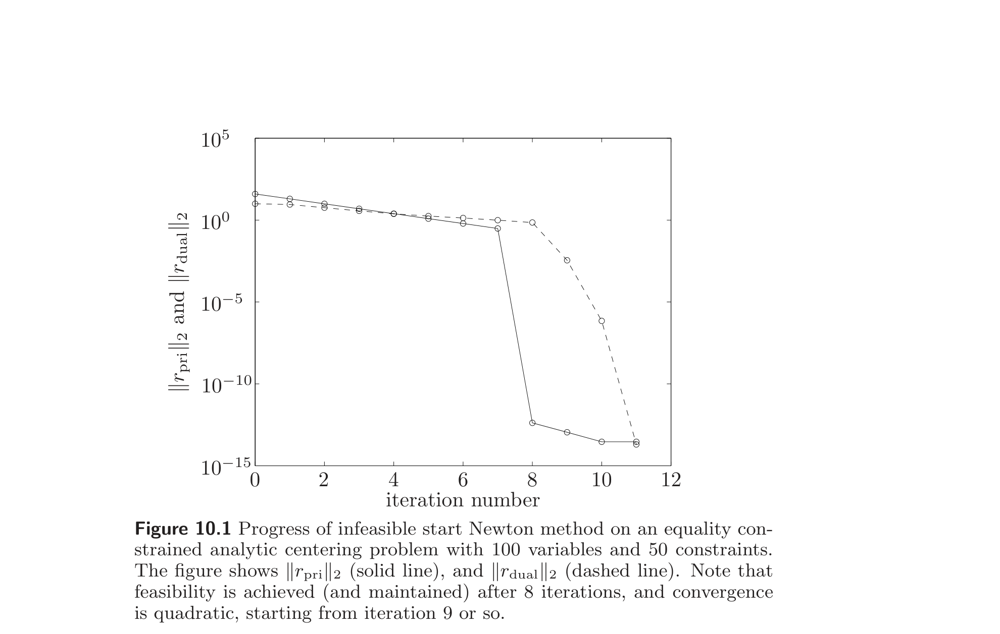
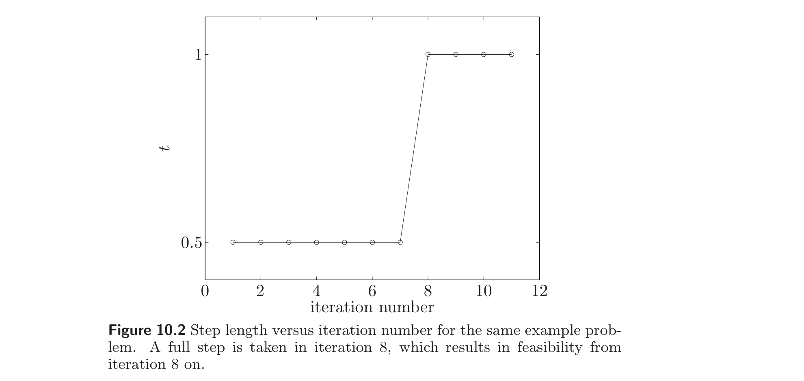
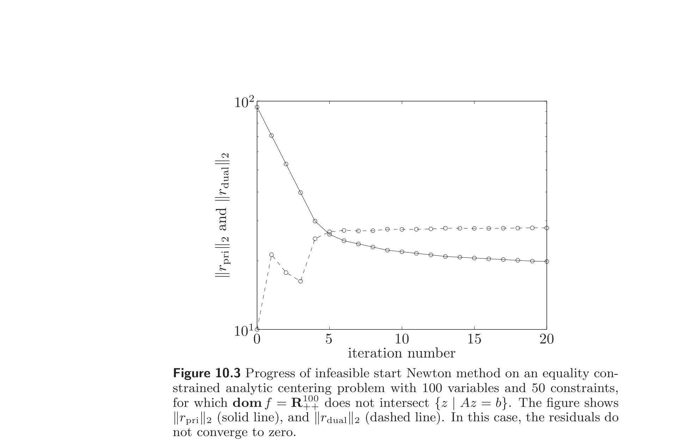
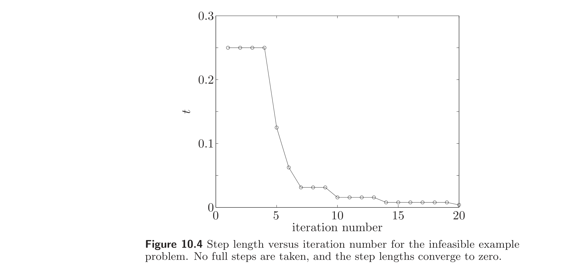
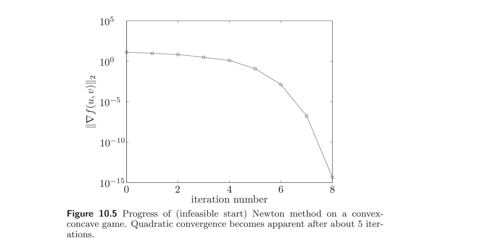
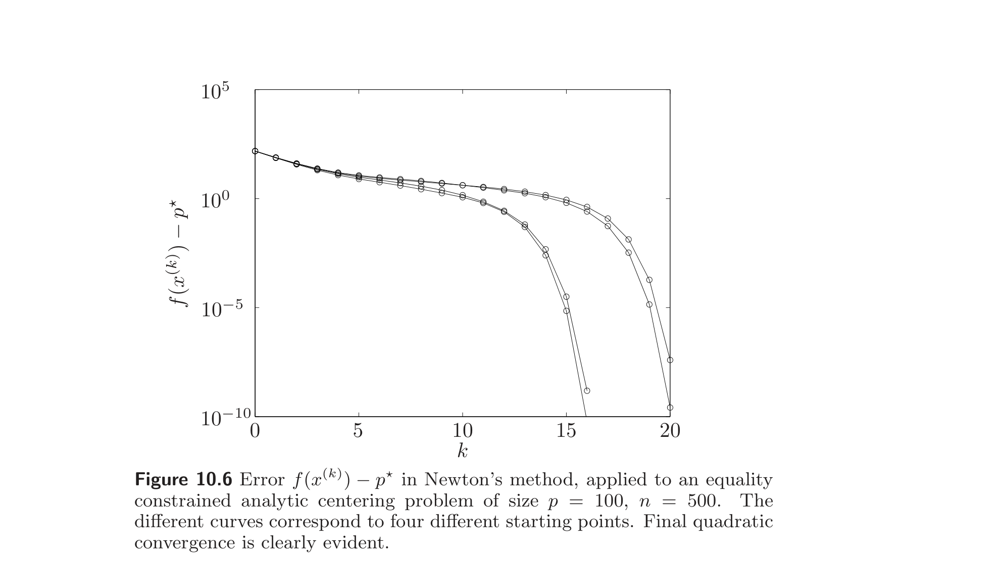
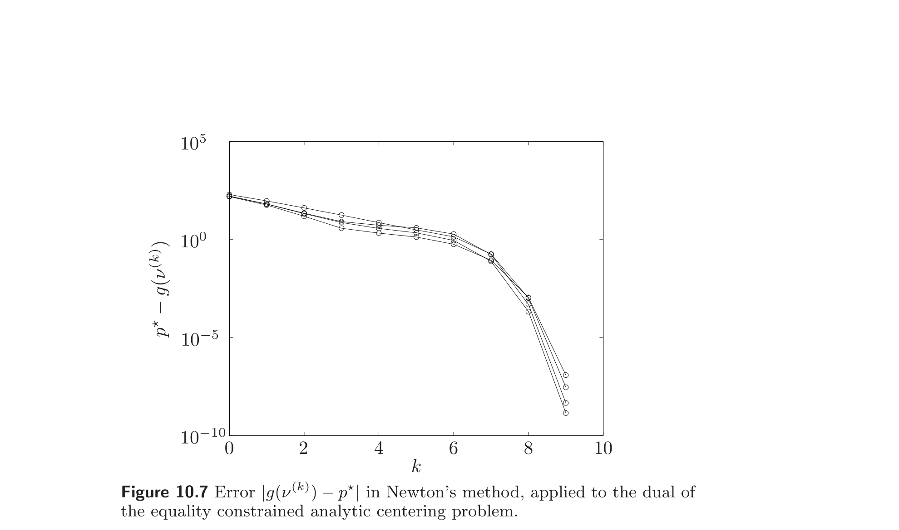
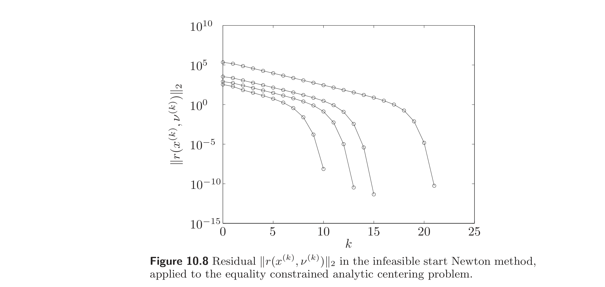

Chapter 10
等式约束极小化 / Equality Constrained Minimization
10.1 Equality constrained minimization problems
10.1 等式约束极小化问题
In this chapter we describe methods for solving a convex optimization problem with equality constraints,
$$ \begin{array}{ll} \text{minimize} & f(x) \\ \text{subject to} & Ax = b, \end{array} \tag{10.1} $$
where $f : \mathbb{R}^n \to \mathbb{R}$ is convex and twice continuously differentiable, and $A \in \mathbb{R}^{p \times n}$ with $\mathop{\text{rank}} A = p < n$. The assumptions on $A$ mean that there are fewer equality constraints than variables, and that the equality constraints are independent. We will assume that an optimal solution $x^\star$ exists, and use $p^\star$ to denote the optimal value, $p^\star = \inf\{f(x) \mid Ax = b\} = f(x^\star)$.
本章描述求解带等式约束的凸优化问题的方法：
$$ \begin{array}{ll} \text{minimize} & f(x) \\ \text{subject to} & Ax = b, \end{array} \tag{10.1} $$
其中 $f : \mathbb{R}^n \to \mathbb{R}$ 凸且二次连续可微，$A \in \mathbb{R}^{p \times n}$ 且 $\mathop{\text{rank}} A = p < n$。对 $A$ 的假设意味着等式约束的数目少于变量数目，且各等式约束相互独立。我们假定最优解 $x^\star$ 存在，并用 $p^\star$ 表示最优值：$p^\star = \inf\{f(x) \mid Ax = b\} = f(x^\star)$。
Recall (from §4.2.3 or §5.5.3) that a point $x^\star \in \mathop{\text{dom}} f$ is optimal for (10.1) if and only if there is a $\nu^\star \in \mathbb{R}^p$ such that
$$ Ax^\star = b, \qquad \nabla f(x^\star) + A^T \nu^\star = 0. \tag{10.2} $$
Solving the equality constrained optimization problem (10.1) is therefore equivalent to finding a solution of the KKT equations (10.2), which is a set of $n + p$ equations in the $n + p$ variables $x^\star, \nu^\star$.
回顾（§4.2.3 或 §5.5.3）可知，点 $x^\star \in \mathop{\text{dom}} f$ 为 (10.1) 的最优解当且仅当存在 $\nu^\star \in \mathbb{R}^p$ 使
$$ Ax^\star = b, \qquad \nabla f(x^\star) + A^T \nu^\star = 0. \tag{10.2} $$
因此，求解等式约束优化问题 (10.1) 等价于求 KKT 方程 (10.2) 的解，这是关于 $n + p$ 个变量 $x^\star, \nu^\star$ 的 $n + p$ 个方程构成的方程组。
The first set of equations, $Ax^\star = b$, are called the primal feasibility equations, which are linear. The second set of equations, $\nabla f(x^\star) + A^T \nu^\star = 0$, are called the dual feasibility equations, and are in general nonlinear. As with unconstrained optimization, there are a few problems for which we can solve these optimality conditions analytically. The most important special case is when $f$ is quadratic, which we examine in §10.1.1.
第一组方程 $Ax^\star = b$ 称为原始可行性方程，是线性的。第二组方程 $\nabla f(x^\star) + A^T \nu^\star = 0$ 称为对偶可行性方程，一般是非线性的。与无约束优化一样，有少数问题可以解析地求解这些最优性条件。最重要的特殊情形是 $f$ 为二次函数的情形，我们在 §10.1.1 中讨论。
Any equality constrained minimization problem can be reduced to an equivalent unconstrained problem by eliminating the equality constraints, after which the methods of chapter 9 can be used to solve the problem. Another approach is to solve the dual problem (assuming the dual function is twice differentiable) using an unconstrained minimization method, and then recover the solution of the equality constrained problem (10.1) from the dual solution. The elimination and dual methods are briefly discussed in §10.1.2 and §10.1.3, respectively.
任何等式约束极小化问题都可通过消去等式约束化为等价的无约束问题，之后可用第 9 章的方法求解。另一种途径是（假设对偶函数二次可微）用无约束极小化方法求解对偶问题，再由对偶解恢复等式约束问题 (10.1) 的解。消去法和对偶法分别在 §10.1.2 和 §10.1.3 中简要讨论。
The bulk of this chapter is devoted to extensions of Newton's method that directly handle equality constraints. In many cases these methods are preferable to methods that reduce an equality constrained problem to an unconstrained one. One reason is that problem structure, such as sparsity, is often destroyed by elimination (or forming the dual); in contrast, a method that directly handles equality constraints can exploit the problem structure. Another reason is conceptual: methods that directly handle equality constraints can be thought of as methods for directly solving the optimality conditions (10.2).
本章的主体 devoted 于直接处理等式约束的牛顿法推广。在许多情形下，这些方法优于将等式约束问题化为无约束问题的方法。原因之一是消去（或构造对偶）往往会破坏问题结构（如稀疏性）；而直接处理等式约束的方法可利用问题的结构。另一原因是概念上的：直接处理等式约束的方法可视为直接求解最优性条件 (10.2) 的方法。
10.1.1 Equality constrained convex quadratic minimization
10.1.1 等式约束凸二次极小化
Consider the equality constrained convex quadratic minimization problem
$$ \begin{array}{ll} \text{minimize} & f(x) = (1/2)x^T P x + q^T x + r \\ \text{subject to} & Ax = b, \end{array} \tag{10.3} $$
where $P \in \mathbb{S}^n_+$ and $A \in \mathbb{R}^{p \times n}$. This problem is important on its own, and also because it forms the basis for an extension of Newton's method to equality constrained problems.
考虑等式约束凸二次极小化问题
$$ \begin{array}{ll} \text{minimize} & f(x) = (1/2)x^T P x + q^T x + r \\ \text{subject to} & Ax = b, \end{array} \tag{10.3} $$
其中 $P \in \mathbb{S}^n_+$，$A \in \mathbb{R}^{p \times n}$。此问题本身重要，也因为它构成了将牛顿法推广到等式约束问题的基础。
Here the optimality conditions (10.2) are
$$ Ax^\star = b, \qquad Px^\star + q + A^T \nu^\star = 0, $$
which we can write as
$$ \begin{bmatrix} P & A^T \\ A & 0 \end{bmatrix} \begin{bmatrix} x^\star \\ \nu^\star \end{bmatrix} = \begin{bmatrix} -q \\ b \end{bmatrix}. \tag{10.4} $$
This set of $n + p$ linear equations in the $n + p$ variables $x^\star, \nu^\star$ is called the KKT system for the equality constrained quadratic optimization problem (10.3). The coefficient matrix is called the KKT matrix.
此处最优性条件 (10.2) 为
$$ Ax^\star = b, \qquad Px^\star + q + A^T \nu^\star = 0, $$
可写成
$$ \begin{bmatrix} P & A^T \\ A & 0 \end{bmatrix} \begin{bmatrix} x^\star \\ \nu^\star \end{bmatrix} = \begin{bmatrix} -q \\ b \end{bmatrix}. \tag{10.4} $$
这组关于 $n + p$ 个变量 $x^\star, \nu^\star$ 的 $n + p$ 个线性方程称为等式约束二次优化问题 (10.3) 的 KKT 系统。其系数矩阵称为 KKT 矩阵。
When the KKT matrix is nonsingular, there is a unique optimal primal-dual pair $(x^\star, \nu^\star)$. If the KKT matrix is singular, but the KKT system is solvable, any solution yields an optimal pair $(x^\star, \nu^\star)$. If the KKT system is not solvable, the quadratic optimization problem is unbounded below or infeasible. Indeed, in this case there exist $v \in \mathbb{R}^n$ and $w \in \mathbb{R}^p$ such that
$$ Pv + A^T w = 0, \qquad Av = 0, \qquad -q^T v + b^T w > 0. $$
Let $\hat{x}$ be any feasible point. The point $x = \hat{x} + tv$ is feasible for all $t$ and
$$ f(\hat{x} + tv) = f(\hat{x}) + t(v^T P \hat{x} + q^T v) + (1/2)t^2 v^T P v = f(\hat{x}) + t(-\hat{x}^T A^T w + q^T v) - (1/2)t^2 w^T A v = f(\hat{x}) + t(-b^T w + q^T v), $$
which decreases without bound as $t \to \infty$.
当 KKT 矩阵非奇异时，存在唯一的最优原始-对偶对 $(x^\star, \nu^\star)$。若 KKT 矩阵奇异但 KKT 系统可解，则任一解都给出最优对 $(x^\star, \nu^\star)$。若 KKT 系统不可解，则该二次优化问题无下界或不可行。事实上，此时存在 $v \in \mathbb{R}^n$ 和 $w \in \mathbb{R}^p$ 使
$$ Pv + A^T w = 0, \qquad Av = 0, \qquad -q^T v + b^T w > 0. $$
设 $\hat{x}$ 为任一可行点。点 $x = \hat{x} + tv$ 对所有 $t$ 都可行，且
$$ f(\hat{x} + tv) = f(\hat{x}) + t(v^T P \hat{x} + q^T v) + (1/2)t^2 v^T P v = f(\hat{x}) + t(-\hat{x}^T A^T w + q^T v) - (1/2)t^2 w^T A v = f(\hat{x}) + t(-b^T w + q^T v), $$
当 $t \to \infty$ 时无界下降。
Nonsingularity of the KKT matrix
KKT 矩阵的非奇异性
Recall our assumption that $P \in \mathbb{S}^n_+$ and $\mathop{\text{rank}} A = p < n$. There are several conditions equivalent to nonsingularity of the KKT matrix:
- $\mathcal{N}(P) \cap \mathcal{N}(A) = \{0\}$, i.e., $P$ and $A$ have no nontrivial common nullspace.
- $Ax = 0,\ x \ne 0 \Rightarrow x^T P x > 0$, i.e., $P$ is positive definite on the nullspace of $A$.
- $F^T P F \succ 0$, where $F \in \mathbb{R}^{n \times (n-p)}$ is a matrix for which $\mathcal{R}(F) = \mathcal{N}(A)$.
(See exercise 10.1.) As an important special case, we note that if $P \succ 0$, the KKT matrix must be nonsingular.
回顾我们假定 $P \in \mathbb{S}^n_+$ 且 $\mathop{\text{rank}} A = p < n$。与 KKT 矩阵非奇异性等价的几个条件如下：
- $\mathcal{N}(P) \cap \mathcal{N}(A) = \{0\}$，即 $P$ 与 $A$ 没有非平凡公共零空间。
- $Ax = 0,\ x \ne 0 \Rightarrow x^T P x > 0$，即 $P$ 在 $A$ 的零空间上正定。
- $F^T P F \succ 0$，其中 $F \in \mathbb{R}^{n \times (n-p)}$ 是满足 $\mathcal{R}(F) = \mathcal{N}(A)$ 的矩阵。
（见习题 10.1。）作为一个重要的特殊情形，我们注意到若 $P \succ 0$，则 KKT 矩阵必非奇异。
10.1.2 Eliminating equality constraints
10.1.2 消去等式约束
One general approach to solving the equality constrained problem (10.1) is to eliminate the equality constraints, as described in §4.2.4, and then solve the resulting unconstrained problem using methods for unconstrained minimization. We first find a matrix $F \in \mathbb{R}^{n \times (n-p)}$ and vector $\hat{x} \in \mathbb{R}^n$ that parametrize the (affine) feasible set:
$$ \{x \mid Ax = b\} = \{Fz + \hat{x} \mid z \in \mathbb{R}^{n-p}\}. $$
Here $\hat{x}$ can be chosen as any particular solution of $Ax = b$, and $F \in \mathbb{R}^{n \times (n-p)}$ is any matrix whose range is the nullspace of $A$. We then form the reduced or eliminated optimization problem
$$ \text{minimize} \quad \tilde{f}(z) = f(Fz + \hat{x}), \tag{10.5} $$
which is an unconstrained problem with variable $z \in \mathbb{R}^{n-p}$. From its solution $z^\star$, we can find the solution of the equality constrained problem as $x^\star = Fz^\star + \hat{x}$.
求解等式约束问题 (10.1) 的一种一般方法是按 §4.2.4 所述消去等式约束，再用无约束极小化的方法求解所得的无约束问题。我们先求一个矩阵 $F \in \mathbb{R}^{n \times (n-p)}$ 和向量 $\hat{x} \in \mathbb{R}^n$，用以参数化（仿射）可行集：
$$ \{x \mid Ax = b\} = \{Fz + \hat{x} \mid z \in \mathbb{R}^{n-p}\}. $$
这里 $\hat{x}$ 可取 $Ax = b$ 的任一特解，$F \in \mathbb{R}^{n \times (n-p)}$ 是其值域为 $A$ 的零空间的任一矩阵。然后构造化简或消去后的优化问题
$$ \text{minimize} \quad \tilde{f}(z) = f(Fz + \hat{x}), \tag{10.5} $$
它是以 $z \in \mathbb{R}^{n-p}$ 为变量的无约束问题。由其解 $z^\star$ 可得等式约束问题的解 $x^\star = Fz^\star + \hat{x}$。
We can also construct an optimal dual variable $\nu^\star$ for the equality constrained problem, as
$$ \nu^\star = -(AA^T)^{-1} A \nabla f(x^\star). $$
To show that this expression is correct, we must verify that the dual feasibility condition
$$ \nabla f(x^\star) + A^T (-(AA^T)^{-1} A \nabla f(x^\star)) = 0 \tag{10.6} $$
holds. To show this, we note that
$$ \begin{bmatrix} F^T \\ A \end{bmatrix} \left( \nabla f(x^\star) - A^T (AA^T)^{-1} A \nabla f(x^\star) \right) = 0, $$
where in the top block we use $F^T \nabla f(x^\star) = \nabla \tilde{f}(z^\star) = 0$ and $AF = 0$. Since the matrix on the left is nonsingular, this implies (10.6).
我们还可构造等式约束问题的最优对偶变量 $\nu^\star$：
$$ \nu^\star = -(AA^T)^{-1} A \nabla f(x^\star). $$
为证此表达式正确，需验证对偶可行性条件
$$ \nabla f(x^\star) + A^T (-(AA^T)^{-1} A \nabla f(x^\star)) = 0 \tag{10.6} $$
成立。为此我们注意到
$$ \begin{bmatrix} F^T \\ A \end{bmatrix} \left( \nabla f(x^\star) - A^T (AA^T)^{-1} A \nabla f(x^\star) \right) = 0, $$
其中上块用到 $F^T \nabla f(x^\star) = \nabla \tilde{f}(z^\star) = 0$ 及 $AF = 0$。由于左端矩阵非奇异，故推得 (10.6)。
Example 10.1 Optimal allocation with resource constraint. We consider the problem
$$ \begin{array}{ll} \text{minimize} & \sum_{i=1}^n f_i(x_i) \\ \text{subject to} & \sum_{i=1}^n x_i = b, \end{array} $$
where the functions $f_i : \mathbb{R} \to \mathbb{R}$ are convex and twice differentiable, and $b \in \mathbb{R}$ is a problem parameter. We interpret this as the problem of optimally allocating a single resource, with a fixed total amount $b$ (the budget) to $n$ otherwise independent activities.
We can eliminate $x_n$ (for example) using the parametrization
$$ x_n = b - x_1 - \cdots - x_{n-1}, $$
which corresponds to the choices
$$ \hat{x} = b e_n, \qquad F = \begin{bmatrix} I \\ -\mathbf{1}^T \end{bmatrix} \in \mathbb{R}^{n \times (n-1)}. $$
The reduced problem is then
$$ \text{minimize} \quad f_n(b - x_1 - \cdots - x_{n-1}) + \sum_{i=1}^{n-1} f_i(x_i), $$
with variables $x_1, \ldots, x_{n-1}$.
例 10.1 带资源约束的最优分配。 考虑问题
$$ \begin{array}{ll} \text{minimize} & \sum_{i=1}^n f_i(x_i) \\ \text{subject to} & \sum_{i=1}^n x_i = b, \end{array} $$
其中 $f_i : \mathbb{R} \to \mathbb{R}$ 凸且二次可微，$b \in \mathbb{R}$ 为问题参数。我们将其理解为最优分配单一资源的问题：将总量固定为 $b$（预算）的资源分配给 $n$ 个否则相互独立的活动。
我们可（例如）用参数化
$$ x_n = b - x_1 - \cdots - x_{n-1} $$
消去 $x_n$，对应选取
$$ \hat{x} = b e_n, \qquad F = \begin{bmatrix} I \\ -\mathbf{1}^T \end{bmatrix} \in \mathbb{R}^{n \times (n-1)}. $$
化简后的问题为
$$ \text{minimize} \quad f_n(b - x_1 - \cdots - x_{n-1}) + \sum_{i=1}^{n-1} f_i(x_i), $$
变量为 $x_1, \ldots, x_{n-1}$。
Choice of elimination matrix
消去矩阵的选取
There are, of course, many possible choices for the elimination matrix $F$, which can be chosen as any matrix in $\mathbb{R}^{n \times (n-p)}$ with $\mathcal{R}(F) = \mathcal{N}(A)$. If $F$ is one such matrix, and $T \in \mathbb{R}^{(n-p) \times (n-p)}$ is nonsingular, then $\tilde{F} = FT$ is also a suitable elimination matrix, since
$$ \mathcal{R}(\tilde{F}) = \mathcal{R}(F) = \mathcal{N}(A). $$
Conversely, if $F$ and $\tilde{F}$ are any two suitable elimination matrices, then there is some nonsingular $T$ such that $\tilde{F} = FT$.
If we eliminate the equality constraints using $F$, we solve the unconstrained problem
$$ \text{minimize} \quad f(Fz + \hat{x}), $$
while if $\tilde{F}$ is used, we solve the unconstrained problem
$$ \text{minimize} \quad f(\tilde{F}\tilde{z} + \hat{x}) = f(F(T\tilde{z}) + \hat{x}). $$
This problem is equivalent to the one above, and is simply obtained by the change of coordinates $z = T\tilde{z}$. In other words, changing the elimination matrix can be thought of as changing variables in the reduced problem.
当然，消去矩阵 $F$ 有多种可能的选取，可选 $\mathbb{R}^{n \times (n-p)}$ 中满足 $\mathcal{R}(F) = \mathcal{N}(A)$ 的任一矩阵。若 $F$ 是这样的一矩阵，且 $T \in \mathbb{R}^{(n-p) \times (n-p)}$ 非奇异，则 $\tilde{F} = FT$ 也是合适的消去矩阵，因为
$$ \mathcal{R}(\tilde{F}) = \mathcal{R}(F) = \mathcal{N}(A). $$
反之，若 $F$ 和 $\tilde{F}$ 是任意两个合适的消去矩阵，则存在某非奇异 $T$ 使 $\tilde{F} = FT$。
若用 $F$ 消去等式约束，我们求解无约束问题
$$ \text{minimize} \quad f(Fz + \hat{x}), $$
若用 $\tilde{F}$，则求解无约束问题
$$ \text{minimize} \quad f(\tilde{F}\tilde{z} + \hat{x}) = f(F(T\tilde{z}) + \hat{x}). $$
此问题与上式等价，仅由坐标变换 $z = T\tilde{z}$ 得到。换言之，更换消去矩阵可视为在化简问题中作变量替换。
10.1.3 Solving equality constrained problems via the dual
10.1.3 通过对偶求解等式约束问题
Another approach to solving (10.1) is to solve the dual, and then recover the optimal primal variable $x^\star$, as described in §5.5.5. The dual function of (10.1) is
$$ g(\nu) = -b^T \nu + \inf_x (f(x) + \nu^T A x) = -b^T \nu - \sup_x \left( (-A^T \nu)^T x - f(x) \right) = -b^T \nu - f^*(-A^T \nu), $$
where $f^*$ is the conjugate of $f$, so the dual problem is
$$ \text{maximize} \quad -b^T \nu - f^*(-A^T \nu). $$
Since by assumption there is an optimal point, the problem is strictly feasible, so Slater's condition holds. Therefore strong duality holds, and the dual optimum is attained, i.e., there exists a $\nu^\star$ with $g(\nu^\star) = p^\star$.
If the dual function $g$ is twice differentiable, then the methods for unconstrained minimization described in chapter 9 can be used to maximize $g$. (In general, the dual function $g$ need not be twice differentiable, even if $f$ is.) Once we find an optimal dual variable $\nu^\star$, we reconstruct an optimal primal solution $x^\star$ from it. (This is not always straightforward; see §5.5.5.)
求解 (10.1) 的另一途径是求解对偶，再恢复最优原始变量 $x^\star$，如 §5.5.5 所述。(10.1) 的对偶函数为
$$ g(\nu) = -b^T \nu + \inf_x (f(x) + \nu^T A x) = -b^T \nu - \sup_x \left( (-A^T \nu)^T x - f(x) \right) = -b^T \nu - f^*(-A^T \nu), $$
其中 $f^*$ 为 $f$ 的共轭，故对偶问题为
$$ \text{maximize} \quad -b^T \nu - f^*(-A^T \nu). $$
由假设存在最优点，故问题严格可行，从而 Slater 条件成立。因此强对偶成立，且对偶最优值可达，即存在 $\nu^\star$ 使 $g(\nu^\star) = p^\star$。
若对偶函数 $g$ 二次可微，则可用第 9 章的无约束极小化方法来极大化 $g$。（一般而言，即使 $f$ 二次可微，对偶函数 $g$ 也未必二次可微。）一旦求得最优对偶变量 $\nu^\star$，便可由之重构最优原始解 $x^\star$。（这并非总是直接易行的；见 §5.5.5。）
Example 10.2 Equality constrained analytic center. We consider the problem
$$ \begin{array}{ll} \text{minimize} & f(x) = -\sum_{i=1}^n \log x_i \\ \text{subject to} & Ax = b, \end{array} \tag{10.7} $$
where $A \in \mathbb{R}^{p \times n}$, with implicit constraint $x \succ 0$. Using
$$ f^*(y) = \sum_{i=1}^n (-1 - \log(-y_i)) = -n - \sum_{i=1}^n \log(-y_i) $$
(with $\mathop{\text{dom}} f^* = -\mathbb{R}^n_{++}$), the dual problem is
$$ \text{maximize} \quad g(\nu) = -b^T \nu + n + \sum_{i=1}^n \log(A^T \nu)_i, \tag{10.8} $$
with implicit constraint $A^T \nu \succ 0$. Here we can easily solve the dual feasibility equation, i.e., find the $x$ that minimizes $L(x, \nu)$:
$$ \nabla f(x) + A^T \nu = -(1/x_1, \ldots, 1/x_n) + A^T \nu = 0, $$
and so
$$ x_i(\nu) = 1/(A^T \nu)_i. \tag{10.9} $$
To solve the equality constrained analytic centering problem (10.7), we solve the (unconstrained) dual problem (10.8), and then recover the optimal solution of (10.7) via (10.9).
例 10.2 等式约束解析中心。 考虑问题
$$ \begin{array}{ll} \text{minimize} & f(x) = -\sum_{i=1}^n \log x_i \\ \text{subject to} & Ax = b, \end{array} \tag{10.7} $$
其中 $A \in \mathbb{R}^{p \times n}$，隐含约束 $x \succ 0$。利用
$$ f^*(y) = \sum_{i=1}^n (-1 - \log(-y_i)) = -n - \sum_{i=1}^n \log(-y_i) $$
（$\mathop{\text{dom}} f^* = -\mathbb{R}^n_{++}$），对偶问题为
$$ \text{maximize} \quad g(\nu) = -b^T \nu + n + \sum_{i=1}^n \log(A^T \nu)_i, \tag{10.8} $$
隐含约束 $A^T \nu \succ 0$。此处我们容易求解对偶可行性方程，即求使 $L(x, \nu)$ 最小的 $x$：
$$ \nabla f(x) + A^T \nu = -(1/x_1, \ldots, 1/x_n) + A^T \nu = 0, $$
于是
$$ x_i(\nu) = 1/(A^T \nu)_i. \tag{10.9} $$
为求解等式约束解析中心化问题 (10.7)，我们求解（无约束）对偶问题 (10.8)，再由 (10.9) 恢复 (10.7) 的最优解。
10.2 Newton's method with equality constraints
10.2 带等式约束的牛顿法
In this section we describe an extension of Newton's method to include equality constraints. The method is almost the same as Newton's method without constraints, except for two differences: The initial point must be feasible (i.e., satisfy $x \in \mathop{\text{dom}} f$ and $Ax = b$), and the definition of Newton step is modified to take the equality constraints into account. In particular, we make sure that the Newton step $\Delta x_{\text{nt}}$ is a feasible direction, i.e., $A\Delta x_{\text{nt}} = 0$.
本节描述将牛顿法推广以包含等式约束的方法。该方法与无约束牛顿法几乎相同，仅两处不同：初始点必须可行（即满足 $x \in \mathop{\text{dom}} f$ 且 $Ax = b$），以及牛顿步的定义经过修改以考虑等式约束。特别地，我们确保牛顿步 $\Delta x_{\text{nt}}$ 是可行方向，即 $A\Delta x_{\text{nt}} = 0$。
10.2.1 The Newton step
10.2.1 牛顿步
Definition via second-order approximation
通过二阶逼近定义
To derive the Newton step $\Delta x_{\text{nt}}$ for the equality constrained problem
$$ \begin{array}{ll} \text{minimize} & f(x) \\ \text{subject to} & Ax = b, \end{array} $$
at the feasible point $x$, we replace the objective with its second-order Taylor approximation near $x$, to form the problem
$$ \begin{array}{ll} \text{minimize} & \hat f(x + v) = f(x) + \nabla f(x)^T v + (1/2) v^T \nabla^2 f(x) v \\ \text{subject to} & A(x + v) = b, \end{array} \tag{10.10} $$
with variable $v$. This is a (convex) quadratic minimization problem with equality constraints, and can be solved analytically. We define $\Delta x_{\text{nt}}$, the Newton step at $x$, as the solution of the convex quadratic problem (10.10), assuming the associated KKT matrix is nonsingular. In other words, the Newton step $\Delta x_{\text{nt}}$ is what must be added to $x$ to solve the problem when the quadratic approximation is used in place of $f$.
为导出等式约束问题
$$ \begin{array}{ll} \text{minimize} & f(x) \\ \text{subject to} & Ax = b, \end{array} $$
在可行点 $x$ 处的牛顿步 $\Delta x_{\text{nt}}$，我们将目标函数用 $x$ 附近的二阶泰勒逼近替代，构成问题
$$ \begin{array}{ll} \text{minimize} & \hat f(x + v) = f(x) + \nabla f(x)^T v + (1/2) v^T \nabla^2 f(x) v \\ \text{subject to} & A(x + v) = b, \end{array} \tag{10.10} $$
变量为 $v$。这是一个带等式约束的（凸）二次极小化问题，可解析求解。我们定义 $\Delta x_{\text{nt}}$，即 $x$ 处的牛顿步，为凸二次问题 (10.10) 的解（假定相关 KKT 矩阵非奇异）。换言之，当用二次逼近代替 $f$ 时，牛顿步 $\Delta x_{\text{nt}}$ 即为求解问题需加到 $x$ 上的量。
From our analysis in §10.1.1 of the equality constrained quadratic problem, the Newton step $\Delta x_{\text{nt}}$ is characterized by
$$ \begin{bmatrix} \nabla^2 f(x) & A^T \\ A & 0 \end{bmatrix} \begin{bmatrix} \Delta x_{\text{nt}} \\ w \end{bmatrix} = \begin{bmatrix} -\nabla f(x) \\ 0 \end{bmatrix}, \tag{10.11} $$
where $w$ is the associated optimal dual variable for the quadratic problem. The Newton step is defined only at points for which the KKT matrix is nonsingular.
As in Newton's method for unconstrained problems, we observe that when the objective $f$ is exactly quadratic, the Newton update $x + \Delta x_{\text{nt}}$ exactly solves the equality constrained minimization problem, and in this case the vector $w$ is the optimal dual variable for the original problem. This suggests, as in the unconstrained case, that when $f$ is nearly quadratic, $x + \Delta x_{\text{nt}}$ should be a very good estimate of the solution $x^\star$, and $w$ should be a good estimate of the optimal dual variable $\nu^\star$.
由 §10.1.1 对等式约束二次问题的分析，牛顿步 $\Delta x_{\text{nt}}$ 满足
$$ \begin{bmatrix} \nabla^2 f(x) & A^T \\ A & 0 \end{bmatrix} \begin{bmatrix} \Delta x_{\text{nt}} \\ w \end{bmatrix} = \begin{bmatrix} -\nabla f(x) \\ 0 \end{bmatrix}, \tag{10.11} $$
其中 $w$ 是该二次问题对应的最优对偶变量。牛顿步仅在 KKT 矩阵非奇异的点处有定义。
如同无约束问题的牛顿法，我们注意到当目标 $f$ 恰为二次时，牛顿更新 $x + \Delta x_{\text{nt}}$ 恰好求解等式约束极小化问题，此时向量 $w$ 即为原问题的最优对偶变量。这表明，与无约束情形一样，当 $f$ 近似二次时，$x + \Delta x_{\text{nt}}$ 应是解 $x^\star$ 的极佳估计，而 $w$ 应是最优对偶变量 $\nu^\star$ 的良好估计。
Solution of linearized optimality conditions
线性化最优性条件的解
We can interpret the Newton step $\Delta x_{\text{nt}}$, and the associated vector $w$, as the solutions of a linearized approximation of the optimality conditions
$$ Ax^\star = b, \qquad \nabla f(x^\star) + A^T \nu^\star = 0. $$
We substitute $x + \Delta x_{\text{nt}}$ for $x^\star$ and $w$ for $\nu^\star$, and replace the gradient term in the second equation by its linearized approximation near $x$, to obtain the equations
$$ A(x + \Delta x_{\text{nt}}) = b, \qquad \nabla f(x + \Delta x_{\text{nt}}) + A^T w \approx \nabla f(x) + \nabla^2 f(x) \Delta x_{\text{nt}} + A^T w = 0. $$
Using $Ax = b$, these become
$$ A\Delta x_{\text{nt}} = 0, \qquad \nabla^2 f(x) \Delta x_{\text{nt}} + A^T w = -\nabla f(x), $$
which are precisely the equations (10.11) that define the Newton step.
我们可将牛顿步 $\Delta x_{\text{nt}}$ 及关联向量 $w$ 解释为最优性条件
$$ Ax^\star = b, \qquad \nabla f(x^\star) + A^T \nu^\star = 0 $$
的线性化逼近的解。将 $x + \Delta x_{\text{nt}}$ 代 $x^\star$，$w$ 代 $\nu^\star$，并将第二式中的梯度项用其在 $x$ 附近的线性化逼近代替，得方程
$$ A(x + \Delta x_{\text{nt}}) = b, \qquad \nabla f(x + \Delta x_{\text{nt}}) + A^T w \approx \nabla f(x) + \nabla^2 f(x) \Delta x_{\text{nt}} + A^T w = 0. $$
利用 $Ax = b$，化为
$$ A\Delta x_{\text{nt}} = 0, \qquad \nabla^2 f(x) \Delta x_{\text{nt}} + A^T w = -\nabla f(x), $$
这正是定义牛顿步的方程 (10.11)。
The Newton decrement
牛顿递减量
We define the Newton decrement for the equality constrained problem as
$$ \lambda(x) = \left( \Delta x_{\text{nt}}^T \nabla^2 f(x) \Delta x_{\text{nt}} \right)^{1/2}. \tag{10.12} $$
This is exactly the same expression as (9.29), used in the unconstrained case, and the same interpretations hold. For example, $\lambda(x)$ is the norm of the Newton step, in the norm determined by the Hessian.
Let $\hat f(x + v) = f(x) + \nabla f(x)^T v + (1/2) v^T \nabla^2 f(x) v$ be the second-order Taylor approximation of $f$ at $x$. The difference between $f(x)$ and the minimum of the second-order model satisfies
$$ f(x) - \inf\{ \hat f(x + v) \mid A(x + v) = b \} = \lambda(x)^2 / 2, \tag{10.13} $$
exactly as in the unconstrained case (see exercise 10.6). This means that, as in the unconstrained case, $\lambda(x)^2/2$ gives an estimate of $f(x) - p^\star$, based on the quadratic model at $x$, and also that $\lambda(x)$ (or a multiple of $\lambda(x)^2$) serves as the basis of a good stopping criterion.
我们定义等式约束问题的牛顿递减量为
$$ \lambda(x) = \left( \Delta x_{\text{nt}}^T \nabla^2 f(x) \Delta x_{\text{nt}} \right)^{1/2}. \tag{10.12} $$
这与无约束情形所用表达式 (9.29) 完全相同，解释也相同。例如 $\lambda(x)$ 是牛顿步在 Hessian 所确定的范数下的范数。
设 $\hat f(x + v) = f(x) + \nabla f(x)^T v + (1/2) v^T \nabla^2 f(x) v$ 为 $f$ 在 $x$ 处的二阶泰勒逼近。$f(x)$ 与二阶模型的最小值之差满足
$$ f(x) - \inf\{ \hat f(x + v) \mid A(x + v) = b \} = \lambda(x)^2 / 2, \tag{10.13} $$
与无约束情形完全相同（见习题 10.6）。这意味着，与无约束情形一样，$\lambda(x)^2/2$ 给出了基于 $x$ 处二次模型的 $f(x) - p^\star$ 的估计，且 $\lambda(x)$（或 $\lambda(x)^2$ 的某倍数）构成良好停止判据的基础。
The Newton decrement comes up in the line search as well, since the directional derivative of $f$ in the direction $\Delta x_{\text{nt}}$ is
$$ \frac{d}{dt} f(x + t \Delta x_{\text{nt}}) \bigg|_{t=0} = \nabla f(x)^T \Delta x_{\text{nt}} = -\lambda(x)^2, \tag{10.14} $$
as in the unconstrained case.
牛顿递减量也出现在线搜索中，因为 $f$ 沿方向 $\Delta x_{\text{nt}}$ 的方向导数为
$$ \frac{d}{dt} f(x + t \Delta x_{\text{nt}}) \bigg|_{t=0} = \nabla f(x)^T \Delta x_{\text{nt}} = -\lambda(x)^2, \tag{10.14} $$
与无约束情形相同。
Feasible descent direction
可行下降方向
Suppose that $Ax = b$. We say that $v \in \mathbb{R}^n$ is a feasible direction if $Av = 0$. In this case, every point of the form $x + tv$ is also feasible, i.e., $A(x + tv) = b$. We say that $v$ is a descent direction for $f$ at $x$, if for small $t > 0$, $f(x + tv) < f(x)$.
The Newton step is always a feasible descent direction (except when $x$ is optimal, in which case $\Delta x_{\text{nt}} = 0$). Indeed, the second set of equations that define $\Delta x_{\text{nt}}$ are $A\Delta x_{\text{nt}} = 0$, which shows it is a feasible direction; that it is a descent direction follows from (10.14).
设 $Ax = b$。若 $Av = 0$，则称 $v \in \mathbb{R}^n$ 为可行方向。此时形如 $x + tv$ 的每一点也都可行，即 $A(x + tv) = b$。若对很小的 $t > 0$ 有 $f(x + tv) < f(x)$，则称 $v$ 为 $f$ 在 $x$ 处的下降方向。
牛顿步总是可行下降方向（除非 $x$ 最优，此时 $\Delta x_{\text{nt}} = 0$）。事实上，定义 $\Delta x_{\text{nt}}$ 的第二组方程为 $A\Delta x_{\text{nt}} = 0$，表明它是可行方向；而它是下降方向则由 (10.14) 得出。
Affine invariance
仿射不变性
Like the Newton step and decrement for unconstrained optimization, the Newton step and decrement for equality constrained optimization are affine invariant. Suppose $T \in \mathbb{R}^{n \times n}$ is nonsingular, and define $\bar f(y) = f(Ty)$. We have
$$ \nabla \bar f(y) = T^T \nabla f(Ty), \qquad \nabla^2 \bar f(y) = T^T \nabla^2 f(Ty) T, $$
and the equality constraint $Ax = b$ becomes $ATy = b$.
Now consider the problem of minimizing $\bar f(y)$, subject to $ATy = b$. The Newton step $\Delta y_{\text{nt}}$ at $y$ is given by the solution of
$$ \begin{bmatrix} T^T \nabla^2 f(Ty) T & T^T A^T \\ AT & 0 \end{bmatrix} \begin{bmatrix} \Delta y_{\text{nt}} \\ \bar w \end{bmatrix} = \begin{bmatrix} -T^T \nabla f(Ty) \\ 0 \end{bmatrix}. $$
Comparing with the Newton step $\Delta x_{\text{nt}}$ for $f$ at $x = Ty$, given in (10.11), we see that
$$ T \Delta y_{\text{nt}} = \Delta x_{\text{nt}} $$
(and $w = \bar w$), i.e., the Newton steps at $y$ and $x$ are related by the same change of coordinates as $Ty = x$.
如同无约束优化的牛顿步和递减量，等式约束优化的牛顿步和递减量也是仿射不变的。设 $T \in \mathbb{R}^{n \times n}$ 非奇异，定义 $\bar f(y) = f(Ty)$。有
$$ \nabla \bar f(y) = T^T \nabla f(Ty), \qquad \nabla^2 \bar f(y) = T^T \nabla^2 f(Ty) T, $$
等式约束 $Ax = b$ 变为 $ATy = b$。
现在考虑在约束 $ATy = b$ 下极小化 $\bar f(y)$ 的问题。$y$ 处的牛顿步 $\Delta y_{\text{nt}}$ 由下式的解给出
$$ \begin{bmatrix} T^T \nabla^2 f(Ty) T & T^T A^T \\ AT & 0 \end{bmatrix} \begin{bmatrix} \Delta y_{\text{nt}} \\ \bar w \end{bmatrix} = \begin{bmatrix} -T^T \nabla f(Ty) \\ 0 \end{bmatrix}. $$
与 (10.11) 给出的 $f$ 在 $x = Ty$ 处的牛顿步 $\Delta x_{\text{nt}}$ 相比较，可见
$$ T \Delta y_{\text{nt}} = \Delta x_{\text{nt}} $$
（且 $w = \bar w$），即 $y$ 处与 $x$ 处的牛顿步以与 $Ty = x$ 相同的坐标变换相关联。
10.2.2 Newton's method with equality constraints
10.2.2 带等式约束的牛顿法
The outline of Newton's method with equality constraints is exactly the same as for unconstrained problems.
带等式约束牛顿法的框架与无约束问题的完全相同。
Algorithm 10.1 Newton's method for equality constrained minimization.
given starting point $x \in \mathop{\text{dom}} f$ with $Ax = b$, tolerance $\epsilon > 0$.
repeat
- Compute the Newton step and decrement $\Delta x_{\text{nt}}$, $\lambda(x)$.
- Stopping criterion. quit if $\lambda^2/2 \le \epsilon$.
- Line search. Choose step size $t$ by backtracking line search.
- Update. $x := x + t\Delta x_{\text{nt}}$.
算法 10.1 等式约束极小化的牛顿法。
给定起点 $x \in \mathop{\text{dom}} f$ 满足 $Ax = b$，容差 $\epsilon > 0$。
重复
- 计算牛顿步和递减量 $\Delta x_{\text{nt}}$，$\lambda(x)$。
- 停止判据。 若 $\lambda^2/2 \le \epsilon$ 则退出。
- 线搜索。 用回溯线搜索选取步长 $t$。
- 更新。 $x := x + t\Delta x_{\text{nt}}$。
The method is called a feasible descent method, since all the iterates are feasible, with $f(x^{(k+1)}) < f(x^{(k)})$ (unless $x^{(k)}$ is optimal). Newton's method requires that the KKT matrix be invertible at each $x$; we will be more precise about the assumptions required for convergence in §10.2.4.
该方法称为可行下降方法，因为所有迭代点均可行，且 $f(x^{(k+1)}) < f(x^{(k)})$（除非 $x^{(k)}$ 最优）。牛顿法要求 KKT 矩阵在每个 $x$ 处可逆；我们将在 §10.2.4 中对收敛所需的假设作更精确的说明。
10.2.3 Newton's method and elimination
10.2.3 牛顿法与消去
We now show that the iterates in Newton's method for the equality constrained problem (10.1) coincide with the iterates in Newton's method applied to the reduced problem (10.5). Suppose $F$ satisfies $\mathcal{R}(F) = \mathcal{N}(A)$ and $\mathop{\text{rank}} F = n - p$, and $\hat{x}$ satisfies $A\hat{x} = b$. The gradient and Hessian of the reduced objective function $\tilde f(z) = f(Fz + \hat{x})$ are
$$ \nabla \tilde f(z) = F^T \nabla f(Fz + \hat{x}), \qquad \nabla^2 \tilde f(z) = F^T \nabla^2 f(Fz + \hat{x}) F. $$
From the Hessian expression, we see that the Newton step for the equality constrained problem is defined, i.e., the KKT matrix
$$ \begin{bmatrix} \nabla^2 f(x) & A^T \\ A & 0 \end{bmatrix} $$
is invertible, if and only if the Newton step for the reduced problem is defined, i.e., $\nabla^2 \tilde f(z)$ is invertible.
The Newton step for the reduced problem is
$$ \Delta z_{\text{nt}} = -\nabla^2 \tilde f(z)^{-1} \nabla \tilde f(z) = -(F^T \nabla^2 f(x) F)^{-1} F^T \nabla f(x), \tag{10.15} $$
现在我们证明，等式约束问题 (10.1) 的牛顿法的迭代点，与将牛顿法应用于化简问题 (10.5) 的迭代点一致。设 $F$ 满足 $\mathcal{R}(F) = \mathcal{N}(A)$ 且 $\mathop{\text{rank}} F = n - p$，$\hat{x}$ 满足 $A\hat{x} = b$。化简目标函数 $\tilde f(z) = f(Fz + \hat{x})$ 的梯度和 Hessian 为
$$ \nabla \tilde f(z) = F^T \nabla f(Fz + \hat{x}), \qquad \nabla^2 \tilde f(z) = F^T \nabla^2 f(Fz + \hat{x}) F. $$
由 Hessian 表达式可见，等式约束问题的牛顿步有定义，即 KKT 矩阵
$$ \begin{bmatrix} \nabla^2 f(x) & A^T \\ A & 0 \end{bmatrix} $$
可逆，当且仅当化简问题的牛顿步有定义，即 $\nabla^2 \tilde f(z)$ 可逆。
化简问题的牛顿步为
$$ \Delta z_{\text{nt}} = -\nabla^2 \tilde f(z)^{-1} \nabla \tilde f(z) = -(F^T \nabla^2 f(x) F)^{-1} F^T \nabla f(x), \tag{10.15} $$
where $x = Fz + \hat{x}$. This search direction for the reduced problem corresponds to the direction
$$ F\Delta z_{\text{nt}} = -F(F^T \nabla^2 f(x) F)^{-1} F^T \nabla f(x) $$
for the original, equality constrained problem. We claim this is precisely the same as the Newton direction $\Delta x_{\text{nt}}$ for the original problem, defined in (10.11).
To show this, we take $\Delta x_{\text{nt}} = F\Delta z_{\text{nt}}$, choose
$$ w = -(AA^T)^{-1} A(\nabla f(x) + \nabla^2 f(x) \Delta x_{\text{nt}}), $$
and verify that the equations defining the Newton step,
$$ \nabla^2 f(x) \Delta x_{\text{nt}} + A^T w + \nabla f(x) = 0, \qquad A\Delta x_{\text{nt}} = 0, \tag{10.16} $$
hold. The second equation, $A\Delta x_{\text{nt}} = 0$, is satisfied because $AF = 0$. To verify the first equation, we observe that
$$ \begin{bmatrix} F^T \\ A \end{bmatrix} \left( \nabla^2 f(x) \Delta x_{\text{nt}} + A^T w + \nabla f(x) \right) = \begin{bmatrix} F^T \nabla^2 f(x) \Delta x_{\text{nt}} + F^T A^T w + F^T \nabla f(x) \\ A \nabla^2 f(x) \Delta x_{\text{nt}} + AA^T w + A \nabla f(x) \end{bmatrix} = 0. $$
Since the matrix on the left of the first line is nonsingular, we conclude that (10.16) holds.
其中 $x = Fz + \hat{x}$。化简问题的这一搜索方向对应原等式约束问题的方向
$$ F\Delta z_{\text{nt}} = -F(F^T \nabla^2 f(x) F)^{-1} F^T \nabla f(x) $$
我们断言它恰等于 (10.11) 中定义的原问题的牛顿方向 $\Delta x_{\text{nt}}$。
为证此，取 $\Delta x_{\text{nt}} = F\Delta z_{\text{nt}}$，选
$$ w = -(AA^T)^{-1} A(\nabla f(x) + \nabla^2 f(x) \Delta x_{\text{nt}}), $$
并验证定义牛顿步的方程
$$ \nabla^2 f(x) \Delta x_{\text{nt}} + A^T w + \nabla f(x) = 0, \qquad A\Delta x_{\text{nt}} = 0, \tag{10.16} $$
成立。第二式 $A\Delta x_{\text{nt}} = 0$ 因 $AF = 0$ 而满足。为验证第一式，我们注意到
$$ \begin{bmatrix} F^T \\ A \end{bmatrix} \left( \nabla^2 f(x) \Delta x_{\text{nt}} + A^T w + \nabla f(x) \right) = \begin{bmatrix} F^T \nabla^2 f(x) \Delta x_{\text{nt}} + F^T A^T w + F^T \nabla f(x) \\ A \nabla^2 f(x) \Delta x_{\text{nt}} + AA^T w + A \nabla f(x) \end{bmatrix} = 0. $$
由于第一行左端矩阵非奇异，故 (10.16) 成立。
In a similar way, the Newton decrement $\tilde\lambda(z)$ of $\tilde f$ at $z$ and the Newton decrement of $f$ at $x$ turn out to be equal:
$$ \tilde\lambda(z)^2 = \Delta z_{\text{nt}}^T \nabla^2 \tilde f(z) \Delta z_{\text{nt}} = \Delta z_{\text{nt}}^T F^T \nabla^2 f(x) F \Delta z_{\text{nt}} = \Delta x_{\text{nt}}^T \nabla^2 f(x) \Delta x_{\text{nt}} = \lambda(x)^2. $$
类似地，$\tilde f$ 在 $z$ 处的牛顿递减量 $\tilde\lambda(z)$ 与 $f$ 在 $x$ 处的牛顿递减量相等：
$$ \tilde\lambda(z)^2 = \Delta z_{\text{nt}}^T \nabla^2 \tilde f(z) \Delta z_{\text{nt}} = \Delta z_{\text{nt}}^T F^T \nabla^2 f(x) F \Delta z_{\text{nt}} = \Delta x_{\text{nt}}^T \nabla^2 f(x) \Delta x_{\text{nt}} = \lambda(x)^2. $$
10.2.4 Convergence analysis
10.2.4 收敛性分析
We saw above that applying Newton's method with equality constraints is exactly the same as applying Newton's method to the reduced problem obtained by eliminating the equality constraints. Everything we know about the convergence of Newton's method for unconstrained problems therefore transfers to Newton's method for equality constrained problems. In particular, the practical performance of Newton's method with equality constraints is exactly like the performance of Newton's method for unconstrained problems. Once $x^{(k)}$ is near $x^\star$, convergence is extremely rapid, with a very high accuracy obtained in only a few iterations.
我们在上面看到，对等式约束问题应用牛顿法与对消去等式约束后所得化简问题应用牛顿法完全相同。因此我们关于无约束问题牛顿法收敛性的一切结论都适用于等式约束问题的牛顿法。特别地，带等式约束牛顿法的实际表现与无约束问题的牛顿法完全相同。一旦 $x^{(k)}$ 接近 $x^\star$，收敛极为迅速，仅几次迭代即可达到很高的精度。
Assumptions
假设
We make the following assumptions.
- The sublevel set $S = \{x \mid x \in \mathop{\text{dom}} f,\ f(x) \le f(x^{(0)}),\ Ax = b\}$ is closed, where $x^{(0)} \in \mathop{\text{dom}} f$ satisfies $Ax^{(0)} = b$. This is the case if $f$ is closed (see §A.3.3).
- On the set $S$, we have $\nabla^2 f(x) \preceq M I$, and
$$ \left\| \begin{bmatrix} \nabla^2 f(x) & A^T \\ A & 0 \end{bmatrix}^{-1} \right\|_2 \le K, \tag{10.17} $$
i.e., the inverse of the KKT matrix is bounded on $S$. (Of course the inverse must exist in order for the Newton step to be defined at each point in $S$.)
- For $x, \tilde x \in S$, $\nabla^2 f$ satisfies the Lipschitz condition $\| \nabla^2 f(x) - \nabla^2 f(\tilde x) \|_2 \le L \| x - \tilde x \|_2$.
我们作如下假设。
- 子水平集 $S = \{x \mid x \in \mathop{\text{dom}} f,\ f(x) \le f(x^{(0)}),\ Ax = b\}$ 是闭的，其中 $x^{(0)} \in \mathop{\text{dom}} f$ 满足 $Ax^{(0)} = b$。若 $f$ 是闭的则成立（见 §A.3.3）。
- 在集合 $S$ 上有 $\nabla^2 f(x) \preceq M I$，且
$$ \left\| \begin{bmatrix} \nabla^2 f(x) & A^T \\ A & 0 \end{bmatrix}^{-1} \right\|_2 \le K, \tag{10.17} $$
即 KKT 矩阵的逆在 $S$ 上有界。（当然，为使牛顿步在 $S$ 中每点有定义，其逆必须存在。）
- 对 $x, \tilde x \in S$，$\nabla^2 f$ 满足 Lipschitz 条件 $\| \nabla^2 f(x) - \nabla^2 f(\tilde x) \|_2 \le L \| x - \tilde x \|_2$。
Bounded inverse KKT matrix assumption
有界逆 KKT 矩阵假设
The condition (10.17) plays the role of the strong convexity assumption in the standard Newton method (§9.5.3, page 488). When there are no equality constraints, (10.17) reduces to the condition $\| \nabla^2 f(x)^{-1} \|_2 \le K$ on $S$, so we can take $K = 1/m$, if $\nabla^2 f(x) \succeq m I$ on $S$, where $m > 0$. With equality constraints, the condition is not as simple as a positive lower bound on the minimum eigenvalue. Since the KKT matrix is symmetric, the condition (10.17) is that its eigenvalues, $n$ of which are positive, and $p$ of which are negative, are bounded away from zero.
条件 (10.17) 在标准牛顿法（§9.5.3，第 488 页）中扮演强凸性假设的角色。当没有等式约束时，(10.17) 化为 $S$ 上的条件 $\| \nabla^2 f(x)^{-1} \|_2 \le K$，故若 $S$ 上 $\nabla^2 f(x) \succeq m I$（$m > 0$），可取 $K = 1/m$。有等式约束时，该条件不像最小特征值的正下界那样简单。由于 KKT 矩阵对称，条件 (10.17) 即为其特征值（其中 $n$ 个为正、$p$ 个为负）都偏离零有下界。
Analysis via the eliminated problem
通过消去问题进行分析
The assumptions above imply that the eliminated objective function $\tilde f$, together with the associated initial point $z^{(0)}$, where $x^{(0)} = \hat{x} + Fz^{(0)}$, satisfy the assumptions required in the convergence analysis of Newton's method for unconstrained problems, given in §9.5.3 (with different constants $\tilde m$, $\tilde M$, and $\tilde L$). It follows that Newton's method with equality constraints converges to $x^\star$ (and $\nu^\star$ as well).
To show that the assumptions above imply that the eliminated problem satisfies the assumptions for the unconstrained Newton method is mostly straightforward (see exercise 10.4). Here we show the one implication that is tricky: that the bounded inverse KKT condition, together with the upper bound $\nabla^2 f(x) \preceq M I$, implies that $\nabla^2 \tilde f(z) \succeq m I$ for some positive constant $m$. More specifically we will show that this inequality holds for
$$ m = \frac{\sigma_{\min}(F)^2}{K^2 M}, \tag{10.18} $$
which is positive, since $F$ is full rank.
We show this by contradiction. Suppose that $F^T H F \nsucceq m I$, where $H = \nabla^2 f(x)$. Then we can find $u$, with $\| u \|_2 = 1$, such that $u^T F^T H F u < m$, i.e., $\| H^{1/2} F u \|_2 < m^{1/2}$. Using $AF = 0$, we have
$$ \begin{bmatrix} H & A^T \\ A & 0 \end{bmatrix} \begin{bmatrix} Fu \\ 0 \end{bmatrix} = \begin{bmatrix} HFu \\ 0 \end{bmatrix}, $$
上述假设蕴含消去目标函数 $\tilde f$ 及关联初始点 $z^{(0)}$（其中 $x^{(0)} = \hat{x} + Fz^{(0)}$）满足 §9.5.3 给出的无约束牛顿法收敛性分析所需的假设（常数不同，为 $\tilde m$、$\tilde M$、$\tilde L$）。由此可得，带等式约束的牛顿法收敛到 $x^\star$（以及 $\nu^\star$）。
证明上述假设蕴含消去问题满足无约束牛顿法的假设大多是直接的（见习题 10.4）。这里我们证明较棘手的一个蕴含关系：有界逆 KKT 条件连同上界 $\nabla^2 f(x) \preceq M I$ 蕴含 $\nabla^2 \tilde f(z) \succeq m I$ 对某正常数 $m$ 成立。更具体地，我们将证明此不等式对
$$ m = \frac{\sigma_{\min}(F)^2}{K^2 M}, \tag{10.18} $$
成立，由于 $F$ 满列秩故其为正。
用反证法。设 $F^T H F \nsucceq m I$，其中 $H = \nabla^2 f(x)$。则可找到 $u$，$\| u \|_2 = 1$，使 $u^T F^T H F u < m$，即 $\| H^{1/2} F u \|_2 < m^{1/2}$。利用 $AF = 0$，有
$$ \begin{bmatrix} H & A^T \\ A & 0 \end{bmatrix} \begin{bmatrix} Fu \\ 0 \end{bmatrix} = \begin{bmatrix} HFu \\ 0 \end{bmatrix}, $$
and so
$$ \left\| \begin{bmatrix} H & A^T \\ A & 0 \end{bmatrix}^{-1} \right\|_2 \ge \frac{ \left\| \begin{bmatrix} Fu \\ 0 \end{bmatrix} \right\|_2 }{ \left\| \begin{bmatrix} HFu \\ 0 \end{bmatrix} \right\|_2 } = \frac{ \| Fu \|_2 }{ \| HFu \|_2 }. $$
Using $\| Fu \|_2 \ge \sigma_{\min}(F)$ and
$$ \| HFu \|_2 \le \| H^{1/2} \|_2 \| H^{1/2} Fu \|_2 < M^{1/2} m^{1/2}, $$
we conclude
$$ \left\| \begin{bmatrix} H & A^T \\ A & 0 \end{bmatrix}^{-1} \right\|_2 \ge \frac{ \| Fu \|_2 }{ \| HFu \|_2 } > \frac{ \sigma_{\min}(F) }{ M^{1/2} m^{1/2} } = K, $$
using our expression for $m$ given in (10.18).
从而
$$ \left\| \begin{bmatrix} H & A^T \\ A & 0 \end{bmatrix}^{-1} \right\|_2 \ge \frac{ \left\| \begin{bmatrix} Fu \\ 0 \end{bmatrix} \right\|_2 }{ \left\| \begin{bmatrix} HFu \\ 0 \end{bmatrix} \right\|_2 } = \frac{ \| Fu \|_2 }{ \| HFu \|_2 }. $$
利用 $\| Fu \|_2 \ge \sigma_{\min}(F)$ 及
$$ \| HFu \|_2 \le \| H^{1/2} \|_2 \| H^{1/2} Fu \|_2 < M^{1/2} m^{1/2}, $$
推得
$$ \left\| \begin{bmatrix} H & A^T \\ A & 0 \end{bmatrix}^{-1} \right\|_2 \ge \frac{ \| Fu \|_2 }{ \| HFu \|_2 } > \frac{ \sigma_{\min}(F) }{ M^{1/2} m^{1/2} } = K, $$
其中用到 (10.18) 给出的 $m$ 的表达式。
Convergence analysis for self-concordant functions
自协调函数的收敛性分析
If $f$ is self-concordant, then so is $\tilde f(z) = f(Fz + \hat{x})$. It follows that if $f$ is self-concordant, we have the exact same complexity estimate as for unconstrained problems: the number of iterations required to produce a solution within an accuracy $\epsilon$ is no more than
$$ \frac{20 - 8\alpha}{\alpha\beta(1 - 2\alpha)^2} (f(x^{(0)}) - p^\star) + \log_2 \log_2(1/\epsilon), $$
where $\alpha$ and $\beta$ are the backtracking parameters (see (9.56)).
若 $f$ 自协调，则 $\tilde f(z) = f(Fz + \hat{x})$ 亦然。由此可得，若 $f$ 自协调，我们有与无约束问题完全相同的复杂度估计：得到精度 $\epsilon$ 内的解所需迭代次数不超过
$$ \frac{20 - 8\alpha}{\alpha\beta(1 - 2\alpha)^2} (f(x^{(0)}) - p^\star) + \log_2 \log_2(1/\epsilon), $$
其中 $\alpha$、$\beta$ 为回溯参数（见 (9.56)）。
10.3 Infeasible start Newton method
10.3 不可行起点牛顿法
Newton's method, as described in §10.2, is a feasible descent method. In this section we describe a generalization of Newton's method that works with initial points, and iterates, that are not feasible.
§10.2 所述牛顿法是可行下降方法。本节描述牛顿法的一种推广，它适用于不可行的初始点和迭代点。
10.3.1 Newton step at infeasible points
10.3.1 不可行点处的牛顿步
As in Newton's method, we start with the optimality conditions for the equality constrained minimization problem:
$$ Ax^\star = b, \qquad \nabla f(x^\star) + A^T \nu^\star = 0. $$
Let $x$ denote the current point, which we do not assume to be feasible, but we do assume satisfies $x \in \mathop{\text{dom}} f$. Our goal is to find a step $\Delta x$ so that $x + \Delta x$ satisfies (at least approximately) the optimality conditions, i.e., $x + \Delta x \approx x^\star$. To do this we substitute $x + \Delta x$ for $x^\star$ and $w$ for $\nu^\star$ in the optimality conditions, and use the first-order approximation
$$ \nabla f(x + \Delta x) \approx \nabla f(x) + \nabla^2 f(x) \Delta x $$
for the gradient to obtain
$$ A(x + \Delta x) = b, \qquad \nabla f(x) + \nabla^2 f(x) \Delta x + A^T w = 0. $$
This is a set of linear equations for $\Delta x$ and $w$,
$$ \begin{bmatrix} \nabla^2 f(x) & A^T \\ A & 0 \end{bmatrix} \begin{bmatrix} \Delta x \\ w \end{bmatrix} = -\begin{bmatrix} \nabla f(x) \\ Ax - b \end{bmatrix}. \tag{10.19} $$
如同牛顿法，我们从等式约束极小化问题的最优性条件出发：
$$ Ax^\star = b, \qquad \nabla f(x^\star) + A^T \nu^\star = 0. $$
设 $x$ 为当前点，我们不假定它可行，但假定 $x \in \mathop{\text{dom}} f$。我们的目标是求一个步 $\Delta x$ 使 $x + \Delta x$（至少近似地）满足最优性条件，即 $x + \Delta x \approx x^\star$。为此，将最优性条件中的 $x^\star$ 代以 $x + \Delta x$，$\nu^\star$ 代以 $w$，并用一阶逼近
$$ \nabla f(x + \Delta x) \approx \nabla f(x) + \nabla^2 f(x) \Delta x $$
代替梯度，得
$$ A(x + \Delta x) = b, \qquad \nabla f(x) + \nabla^2 f(x) \Delta x + A^T w = 0. $$
这是关于 $\Delta x$ 和 $w$ 的线性方程组
$$ \begin{bmatrix} \nabla^2 f(x) & A^T \\ A & 0 \end{bmatrix} \begin{bmatrix} \Delta x \\ w \end{bmatrix} = -\begin{bmatrix} \nabla f(x) \\ Ax - b \end{bmatrix}. \tag{10.19} $$
The equations are the same as the equations (10.11) that define the Newton step at a feasible point $x$, with one difference: the second block component of the righthand side contains $Ax - b$, which is the residual vector for the linear equality constraints. When $x$ is feasible, the residual vanishes, and the equations (10.19) reduce to the equations (10.11) that define the standard Newton step at a feasible point $x$. Thus, if $x$ is feasible, the step $\Delta x$ defined by (10.19) coincides with the Newton step described above (but defined only when $x$ is feasible). For this reason we use the notation $\Delta x_{\text{nt}}$ for the step $\Delta x$ defined by (10.19), and refer to it as the Newton step at $x$, with no confusion.
该方程组与定义可行点 $x$ 处牛顿步的方程 (10.11) 相同，仅有一处不同：右端第二个块分量为 $Ax - b$，即线性等式约束的残差向量。当 $x$ 可行时残差为零，方程 (10.19) 化为定义可行点 $x$ 处标准牛顿步的方程 (10.11)。因此，若 $x$ 可行，(10.19) 定义的步 $\Delta x$ 与上面所述牛顿步一致（但仅在 $x$ 可行时有定义）。出于此原因，我们用 $\Delta x_{\text{nt}}$ 记 (10.19) 定义的步 $\Delta x$，并称之为 $x$ 处的牛顿步，不会引起混淆。
Interpretation as primal-dual Newton step
作为原始-对偶牛顿步的解释
We can give an interpretation of the equations (10.19) in terms of a primal-dual method for the equality constrained problem. By a primal-dual method, we mean one in which we update both the primal variable $x$, and the dual variable $\nu$, in order to (approximately) satisfy the optimality conditions.
We express the optimality conditions as $r(x^\star, \nu^\star) = 0$, where $r : \mathbb{R}^n \times \mathbb{R}^p \to \mathbb{R}^n \times \mathbb{R}^p$ is defined as
$$ r(x, \nu) = (r_{\text{dual}}(x, \nu), r_{\text{pri}}(x, \nu)). $$
Here
$$ r_{\text{dual}}(x, \nu) = \nabla f(x) + A^T \nu, \qquad r_{\text{pri}}(x, \nu) = Ax - b $$
are the dual residual and primal residual, respectively. The first-order Taylor approximation of $r$, near our current estimate $y$, is
$$ r(y + z) \approx \hat r(y + z) = r(y) + Dr(y) z, $$
where $Dr(y) \in \mathbb{R}^{(n+p) \times (n+p)}$ is the derivative of $r$, evaluated at $y$ (see §A.4.1). We define the primal-dual Newton step $\Delta y_{\text{pd}}$ as the step $z$ for which the Taylor approximation $\hat r(y + z)$ vanishes, i.e.,
$$ Dr(y) \Delta y_{\text{pd}} = -r(y). \tag{10.20} $$
Note that here we consider both $x$ and $\nu$ as variables; $\Delta y_{\text{pd}} = (\Delta x_{\text{pd}}, \Delta \nu_{\text{pd}})$ gives both a primal and a dual step.
我们可从原始-对偶方法的角度给出方程 (10.19) 的解释。所谓原始-对偶方法，是指同时更新原始变量 $x$ 和对偶变量 $\nu$ 以（近似地）满足最优性条件的方法。
将最优性条件表为 $r(x^\star, \nu^\star) = 0$，其中 $r : \mathbb{R}^n \times \mathbb{R}^p \to \mathbb{R}^n \times \mathbb{R}^p$ 定义为
$$ r(x, \nu) = (r_{\text{dual}}(x, \nu), r_{\text{pri}}(x, \nu)). $$
其中
$$ r_{\text{dual}}(x, \nu) = \nabla f(x) + A^T \nu, \qquad r_{\text{pri}}(x, \nu) = Ax - b $$
分别为对偶残差和原始残差。$r$ 在当前估计 $y$ 附近的一阶泰勒逼近为
$$ r(y + z) \approx \hat r(y + z) = r(y) + Dr(y) z, $$
其中 $Dr(y) \in \mathbb{R}^{(n+p) \times (n+p)}$ 为 $r$ 在 $y$ 处的导数（见 §A.4.1）。我们定义原始-对偶牛顿步 $\Delta y_{\text{pd}}$ 为使泰勒逼近 $\hat r(y + z)$ 为零的步 $z$，即
$$ Dr(y) \Delta y_{\text{pd}} = -r(y). \tag{10.20} $$
注意此处 $x$ 和 $\nu$ 都视为变量；$\Delta y_{\text{pd}} = (\Delta x_{\text{pd}}, \Delta \nu_{\text{pd}})$ 同时给出原始步和对偶步。
Evaluating the derivative of $r$, we can express (10.20) as
$$ \begin{bmatrix} \nabla^2 f(x) & A^T \\ A & 0 \end{bmatrix} \begin{bmatrix} \Delta x_{\text{pd}} \\ \Delta \nu_{\text{pd}} \end{bmatrix} = -\begin{bmatrix} r_{\text{dual}} \\ r_{\text{pri}} \end{bmatrix} = -\begin{bmatrix} \nabla f(x) + A^T \nu \\ Ax - b \end{bmatrix}. \tag{10.21} $$
Writing $\nu + \Delta \nu_{\text{pd}}$ as $\nu_+$, we can express this as
$$ \begin{bmatrix} \nabla^2 f(x) & A^T \\ A & 0 \end{bmatrix} \begin{bmatrix} \Delta x_{\text{pd}} \\ \nu_+ \end{bmatrix} = -\begin{bmatrix} \nabla f(x) \\ Ax - b \end{bmatrix}, \tag{10.22} $$
which is exactly the same set of equations as (10.19). The solutions of (10.19), (10.21), and (10.22) are therefore related as
$$ \Delta x_{\text{nt}} = \Delta x_{\text{pd}}, \qquad w = \nu_+ = \nu + \Delta \nu_{\text{pd}}. $$
This shows that the (infeasible) Newton step is the same as the primal part of the primal-dual step, and the associated dual vector $w$ is the updated primal-dual variable $\nu_+ = \nu + \Delta \nu_{\text{pd}}$.
The two expressions for the Newton step and dual variable (or dual step), given by (10.21) and (10.22), are of course equivalent, but each reveals a different feature of the Newton step. The equation (10.21) shows that the Newton step and the associated dual step are obtained by solving a set of equations, with the primal and dual residuals as the righthand side. The equation (10.22), which is how we originally defined the Newton step, gives the Newton step and the updated dual variable, and shows that the current value of the dual variable is not needed to compute the primal step, or the updated value of the dual variable.
计算 $r$ 的导数，可将 (10.20) 表为
$$ \begin{bmatrix} \nabla^2 f(x) & A^T \\ A & 0 \end{bmatrix} \begin{bmatrix} \Delta x_{\text{pd}} \\ \Delta \nu_{\text{pd}} \end{bmatrix} = -\begin{bmatrix} r_{\text{dual}} \\ r_{\text{pri}} \end{bmatrix} = -\begin{bmatrix} \nabla f(x) + A^T \nu \\ Ax - b \end{bmatrix}. \tag{10.21} $$
将 $\nu + \Delta \nu_{\text{pd}}$ 记为 $\nu_+$，可表为
$$ \begin{bmatrix} \nabla^2 f(x) & A^T \\ A & 0 \end{bmatrix} \begin{bmatrix} \Delta x_{\text{pd}} \\ \nu_+ \end{bmatrix} = -\begin{bmatrix} \nabla f(x) \\ Ax - b \end{bmatrix}, \tag{10.22} $$
与 (10.19) 完全相同。因此 (10.19)、(10.21)、(10.22) 的解之间关系为
$$ \Delta x_{\text{nt}} = \Delta x_{\text{pd}}, \qquad w = \nu_+ = \nu + \Delta \nu_{\text{pd}}. $$
这表明（不可行）牛顿步即原始-对偶步的原始部分，关联的对偶向量 $w$ 即更新后的原始-对偶变量 $\nu_+ = \nu + \Delta \nu_{\text{pd}}$。
(10.21) 与 (10.22) 给出的牛顿步和对偶变量（或对偶步）的两个表达式当然等价，但各揭示牛顿步的不同特征。方程 (10.21) 表明牛顿步及关联的对偶步通过求解以原始和对偶残差为右端的方程组得到。方程 (10.22)（我们最初以此定义牛顿步）给出牛顿步和更新后的对偶变量，并表明计算原始步或对偶变量的更新值都不需要当前对偶变量的值。
Residual norm reduction property
残差范数下降性质
The Newton direction, at an infeasible point, is not necessarily a descent direction for $f$. From (10.19), we note that
$$ \frac{d}{dt} f(x + t\Delta x) \bigg|_{t=0} = \nabla f(x)^T \Delta x = -\Delta x^T \left( \nabla^2 f(x) \Delta x + A^T w \right) = -\Delta x^T \nabla^2 f(x) \Delta x + (Ax - b)^T w, $$
which is not necessarily negative (unless, of course, $x$ is feasible, i.e., $Ax = b$). The primal-dual interpretation, however, shows that the norm of the residual decreases in the Newton direction, i.e.,
$$ \frac{d}{dt} \| r(y + t\Delta y_{\text{pd}}) \|_2^2 \bigg|_{t=0} = 2 r(y)^T Dr(y) \Delta y_{\text{pd}} = -2 r(y)^T r(y). $$
Taking the derivative of the square, we obtain
$$ \frac{d}{dt} \| r(y + t\Delta y_{\text{pd}}) \|_2 \bigg|_{t=0} = -\| r(y) \|_2. \tag{10.23} $$
This allows us to use $\| r \|_2$ to measure the progress of the infeasible start Newton method, for example, in the line search. (For the standard Newton method, we use the function value $f$ to measure progress of the algorithm, at least until quadratic convergence is attained.)
在不可行点处，牛顿方向不一定是 $f$ 的下降方向。由 (10.19) 注意到
$$ \frac{d}{dt} f(x + t\Delta x) \bigg|_{t=0} = \nabla f(x)^T \Delta x = -\Delta x^T \left( \nabla^2 f(x) \Delta x + A^T w \right) = -\Delta x^T \nabla^2 f(x) \Delta x + (Ax - b)^T w, $$
它未必为负（当然，除非 $x$ 可行，即 $Ax = b$）。然而原始-对偶的解释表明，残差的范数沿牛顿方向下降，即
$$ \frac{d}{dt} \| r(y + t\Delta y_{\text{pd}}) \|_2^2 \bigg|_{t=0} = 2 r(y)^T Dr(y) \Delta y_{\text{pd}} = -2 r(y)^T r(y). $$
对平方求导得
$$ \frac{d}{dt} \| r(y + t\Delta y_{\text{pd}}) \|_2 \bigg|_{t=0} = -\| r(y) \|_2. \tag{10.23} $$
这使我们可以用 $\| r \|_2$ 来度量不可行起点牛顿法的进展，例如在线搜索中。（对标准牛顿法，我们用函数值 $f$ 度量算法的进展，至少在达到二次收敛之前如此。）
Full step feasibility property
全步可行性性质
The Newton step $\Delta x_{\text{nt}}$ defined by (10.19) has the property (by construction) that
$$ A(x + \Delta x_{\text{nt}}) = b. \tag{10.24} $$
It follows that, if a step length of one is taken using the Newton step $\Delta x_{\text{nt}}$, the following iterate will be feasible. Once $x$ is feasible, the Newton step becomes a feasible direction, so all future iterates will be feasible, regardless of the step sizes taken.
More generally, we can analyze the effect of a damped step on the equality constraint residual $r_{\text{pri}}$. With a step length $t \in [0, 1]$, the next iterate is $x_+ = x + t\Delta x_{\text{nt}}$, so the equality constraint residual at the next iterate is
$$ r_{\text{pri}+} = A(x + \Delta x_{\text{nt}}t) - b = (1 - t)(Ax - b) = (1 - t) r_{\text{pri}}, $$
using (10.24). Thus, a damped step, with length $t$, causes the residual to be scaled down by a factor $1 - t$. Now suppose that we have $x^{(i+1)} = x^{(i)} + t^{(i)} \Delta x_{\text{nt}}^{(i)}$, for $i = 0, \ldots, k - 1$, where $\Delta x_{\text{nt}}^{(i)}$ is the Newton step at the point $x^{(i)} \in \mathop{\text{dom}} f$, and $t^{(i)} \in [0, 1]$. Then we have
$$ r^{(k)} = \left( \prod_{i=0}^{k-1} (1 - t^{(i)}) \right) r^{(0)}, $$
where $r^{(i)} = Ax^{(i)} - b$ is the residual of $x^{(i)}$. This formula shows that the primal residual at each step is in the direction of the initial primal residual, and is scaled down at each step. It also shows that once a full step is taken, all future iterates are primal feasible.
(10.19) 定义的牛顿步 $\Delta x_{\text{nt}}$ 具有（由构造保证）如下性质：
$$ A(x + \Delta x_{\text{nt}}) = b. \tag{10.24} $$
由此可知，若以牛顿步 $\Delta x_{\text{nt}}$ 取步长为 1，则下一个迭代点可行。一旦 $x$ 可行，牛顿步即成为可行方向，故此后所有迭代点都可行，无论取何种步长。
更一般地，我们可分析阻尼步对等式约束残差 $r_{\text{pri}}$ 的影响。步长 $t \in [0, 1]$ 时，下一迭代点为 $x_+ = x + t\Delta x_{\text{nt}}$，故下一迭代点处的等式约束残差为
$$ r_{\text{pri}+} = A(x + \Delta x_{\text{nt}}t) - b = (1 - t)(Ax - b) = (1 - t) r_{\text{pri}}, $$
其中用到 (10.24)。因此，长为 $t$ 的阻尼步使残差按因子 $1 - t$ 缩减。现设 $x^{(i+1)} = x^{(i)} + t^{(i)} \Delta x_{\text{nt}}^{(i)}$，$i = 0, \ldots, k - 1$，其中 $\Delta x_{\text{nt}}^{(i)}$ 为 $x^{(i)} \in \mathop{\text{dom}} f$ 处的牛顿步，$t^{(i)} \in [0, 1]$。则有
$$ r^{(k)} = \left( \prod_{i=0}^{k-1} (1 - t^{(i)}) \right) r^{(0)}, $$
其中 $r^{(i)} = Ax^{(i)} - b$ 为 $x^{(i)}$ 的残差。此式表明，每一步的原始残差都与初始原始残差同向，且每步缩减。它还表明，一旦取了全步，此后所有迭代点都原始可行。
10.3.2 Infeasible start Newton method
10.3.2 不可行起点牛顿法
We can develop an extension of Newton's method, using the Newton step $\Delta x_{\text{nt}}$ defined by (10.19), with $x^{(0)} \in \mathop{\text{dom}} f$, but not necessarily satisfying $Ax^{(0)} = b$. We also use the dual part of the Newton step: $\Delta \nu_{\text{nt}} = w - \nu$ in the notation of (10.19), or equivalently, $\Delta \nu_{\text{nt}} = \Delta \nu_{\text{pd}}$ in the notation of (10.21).
我们可以用 (10.19) 定义的牛顿步 $\Delta x_{\text{nt}}$ 发展出牛顿法的一种推广，其中 $x^{(0)} \in \mathop{\text{dom}} f$ 但不必满足 $Ax^{(0)} = b$。我们还用到牛顿步的对偶部分：(10.19) 的记号下 $\Delta \nu_{\text{nt}} = w - \nu$，等价地，(10.21) 的记号下 $\Delta \nu_{\text{nt}} = \Delta \nu_{\text{pd}}$。
Algorithm 10.2 Infeasible start Newton method.
given starting point $x \in \mathop{\text{dom}} f$, $\nu$, tolerance $\epsilon > 0$, $\alpha \in (0, 1/2)$, $\beta \in (0, 1)$.
repeat
- Compute primal and dual Newton steps $\Delta x_{\text{nt}}$, $\Delta \nu_{\text{nt}}$.
- Backtracking line search on $\| r \|_2$.
$\quad t := 1$.
$\quad$ while $\| r(x + t\Delta x_{\text{nt}}, \nu + t\Delta \nu_{\text{nt}}) \|_2 > (1 - \alpha t) \| r(x, \nu) \|_2$,
$\quad\quad t := \beta t$.
- Update. $x := x + t\Delta x_{\text{nt}}$, $\nu := \nu + t\Delta \nu_{\text{nt}}$.
until $Ax = b$ and $\| r(x, \nu) \|_2 \le \epsilon$.
算法 10.2 不可行起点牛顿法。
给定起点 $x \in \mathop{\text{dom}} f$，$\nu$，容差 $\epsilon > 0$，$\alpha \in (0, 1/2)$，$\beta \in (0, 1)$。
重复
- 计算原始和对偶牛顿步 $\Delta x_{\text{nt}}$，$\Delta \nu_{\text{nt}}$。
- 对 $\| r \|_2$ 作回溯线搜索。
$\quad t := 1$。
$\quad$ while $\| r(x + t\Delta x_{\text{nt}}, \nu + t\Delta \nu_{\text{nt}}) \|_2 > (1 - \alpha t) \| r(x, \nu) \|_2$,
$\quad\quad t := \beta t$。
- 更新。 $x := x + t\Delta x_{\text{nt}}$，$\nu := \nu + t\Delta \nu_{\text{nt}}$。
until $Ax = b$ 且 $\| r(x, \nu) \|_2 \le \epsilon$。
This algorithm is very similar to the standard Newton method with feasible starting point, with a few exceptions. First, the search directions include the extra correction terms that depend on the primal residual. Second, the line search is carried out using the norm of the residual, instead of the function value $f$. Finally, the algorithm terminates when primal feasibility has been achieved, and the norm of the (dual) residual is small.
The line search in step 2 deserves some comment. Using the norm of the residual in the line search can increase the cost, compared to a line search based on the function value, but the increase is usually negligible. Also, we note that the line search must terminate in a finite number of steps, since (10.23) shows that the line search exit condition is satisfied for small $t$.
The equation (10.24) shows that if at some iteration the step length is chosen to be one, the next iterate will be feasible. Thereafter, all iterates will be feasible, and therefore the search direction for the infeasible start Newton method coincides, once a feasible iterate is obtained, with the search direction for the (feasible) Newton method described in §10.2.
此算法与可行起点的标准牛顿法非常相似，仅少数例外。首先，搜索方向包含依赖于原始残差的额外校正项。其次，线搜索以残差范数而非函数值 $f$ 进行。最后，算法在原始可行性达到且（对偶）残差范数很小时终止。
第 2 步的线搜索值得说明。用残差范数作线搜索相比以函数值为基的线搜索可能增加开销，但通常可忽略。另外，线搜索必在有限步内终止，因为 (10.23) 表明对很小的 $t$ 线搜索退出条件即满足。
方程 (10.24) 表明，若某次迭代步长选为 1，则下一迭代点可行。此后所有迭代点均可行，故一旦得到可行迭代点，不可行起点牛顿法的搜索方向即与 §10.2 所述（可行）牛顿法的搜索方向一致。
There are many variations on the infeasible start Newton method. For example, we can switch to the (feasible) Newton method described in §10.2 once feasibility is achieved. (In other words, we change the line search to one based on $f$, and terminate when $\lambda(x)^2/2 \le \epsilon$.) Once feasibility is achieved, the infeasible start and the standard (feasible) Newton method differ only in the backtracking and exit conditions, and have very similar performance.
不可行起点牛顿法有许多变体。例如，可在达到可行性后切换到 §10.2 所述（可行）牛顿法。（换言之，将线搜索改为基于 $f$ 的，并在 $\lambda(x)^2/2 \le \epsilon$ 时终止。）一旦达到可行性，不可行起点法与标准（可行）牛顿法仅在回溯和退出条件上不同，表现非常相似。
Using infeasible start Newton method to simplify initialization
用不可行起点牛顿法简化初始化
The main advantage of the infeasible start Newton method is in the initialization required. If $\mathop{\text{dom}} f = \mathbb{R}^n$, then initializing the (feasible) Newton method simply requires computing a solution to $Ax = b$, and there is no particular advantage, other than convenience, in using the infeasible start Newton method.
When $\mathop{\text{dom}} f$ is not all of $\mathbb{R}^n$, finding a point in $\mathop{\text{dom}} f$ that satisfies $Ax = b$ can itself be a challenge. One general approach, probably the best when $\mathop{\text{dom}} f$ is complex and not known to intersect $\{z \mid Az = b\}$, is to use a phase I method (described in §11.4) to compute such a point (or verify that $\mathop{\text{dom}} f$ does not intersect $\{z \mid Az = b\}$). But when $\mathop{\text{dom}} f$ is relatively simple, and known to contain a point satisfying $Ax = b$, the infeasible start Newton method gives a simple alternative.
One common example occurs when $\mathop{\text{dom}} f = \mathbb{R}^n_{++}$, as in the equality constrained analytic centering problem described in example 10.2. To initialize Newton's method for the problem
$$ \begin{array}{ll} \text{minimize} & -\sum_{i=1}^n \log x_i \\ \text{subject to} & Ax = b, \end{array} \tag{10.25} $$
requires finding a point $x^{(0)} \succ 0$ with $Ax = b$, which is equivalent to solving a standard form LP feasibility problem. This can be carried out using a phase I method, or alternatively, using the infeasible start Newton method, with any positive initial point, e.g., $x^{(0)} = \mathbf{1}$.
不可行起点牛顿法的主要优点在于所需的初始化。若 $\mathop{\text{dom}} f = \mathbb{R}^n$，则初始化（可行）牛顿法仅需计算 $Ax = b$ 的一个解，使用不可行起点牛顿法并无特别优势（仅方便而已）。
当 $\mathop{\text{dom}} f$ 不是整个 $\mathbb{R}^n$ 时，在 $\mathop{\text{dom}} f$ 中求满足 $Ax = b$ 的点本身可能就是挑战。一种一般方法（可能在 $\mathop{\text{dom}} f$ 复杂且不知是否与 $\{z \mid Az = b\}$ 相交时最优）是用第一阶段法（§11.4 所述）计算这样的点（或验证 $\mathop{\text{dom}} f$ 与 $\{z \mid Az = b\}$ 不相交）。但当 $\mathop{\text{dom}} f$ 相对简单且已知包含满足 $Ax = b$ 的点时，不可行起点牛顿法给出了一种简单的替代方案。
一个常见的例子是 $\mathop{\text{dom}} f = \mathbb{R}^n_{++}$，如例 10.2 所述等式约束解析中心化问题。为初始化问题
$$ \begin{array}{ll} \text{minimize} & -\sum_{i=1}^n \log x_i \\ \text{subject to} & Ax = b, \end{array} \tag{10.25} $$
的牛顿法，需找满足 $Ax = b$ 的点 $x^{(0)} \succ 0$，这等价于求解标准型 LP 可行性问题。这可用第一阶段法完成，或用不可行起点牛顿法以任意正的初始点（如 $x^{(0)} = \mathbf{1}$）完成。
The same trick can be used to initialize unconstrained problems where a starting point in $\mathop{\text{dom}} f$ is not known. As an example, we consider the dual of the equality constrained analytic centering problem (10.25),
$$ \text{maximize} \quad g(\nu) = -b^T \nu + n + \sum_{i=1}^n \log(A^T \nu)_i. $$
To initialize this problem for the (feasible start) Newton method, we must find a point $\nu^{(0)}$ that satisfies $A^T \nu^{(0)} \succ 0$, i.e., we must solve a set of linear inequalities. This can be done using a phase I method, or using an infeasible start Newton method, after reformulating the problem. We first express it as an equality constrained problem,
$$ \begin{array}{ll} \text{maximize} & -b^T \nu + n + \sum_{i=1}^n \log y_i \\ \text{subject to} & y = A^T \nu, \end{array} $$
with new variable $y \in \mathbb{R}^n$. We can now use the infeasible start Newton method, starting with any positive $y^{(0)}$ (and any $\nu^{(0)}$).
The disadvantage of using the infeasible start Newton method to initialize problems for which a strictly feasible starting point is not known is that there is no clear way to detect that there exists no strictly feasible point; the norm of the residual will simply converge, slowly, to some positive value. (Phase I methods, in contrast, can determine this fact unambiguously.) In addition, the convergence of the infeasible start Newton method, before feasibility is achieved, can be slow; see §11.4.2.
同一技巧也可用于初始化 $\mathop{\text{dom}} f$ 中起点未知的无约束问题。作为例子，考虑等式约束解析中心化问题 (10.25) 的对偶
$$ \text{maximize} \quad g(\nu) = -b^T \nu + n + \sum_{i=1}^n \log(A^T \nu)_i. $$
为用（可行起点）牛顿法初始化此问题，须找满足 $A^T \nu^{(0)} \succ 0$ 的点 $\nu^{(0)}$，即须求解一组线性不等式。这可用第一阶段法完成，或在重新表述问题后用不可行起点牛顿法完成。先将它表为等式约束问题
$$ \begin{array}{ll} \text{maximize} & -b^T \nu + n + \sum_{i=1}^n \log y_i \\ \text{subject to} & y = A^T \nu, \end{array} $$
新变量 $y \in \mathbb{R}^n$。现在可用不可行起点牛顿法，以任意正的 $y^{(0)}$（及任意 $\nu^{(0)}$）开始。
用不可行起点牛顿法初始化严格可行起点未知的问题的缺点是：没有明确的方法检测不存在严格可行点；残差范数只会缓慢收敛到某正值。（相比之下，第一阶段法能明确判定此事。）此外，达到可行性之前不可行起点牛顿法的收敛可能较慢；见 §11.4.2。
10.3.3 Convergence analysis
10.3.3 收敛性分析
In this section we show that the infeasible start Newton method converges to the optimal point, provided certain assumptions hold. The convergence proof is very similar to those for the standard Newton method, or the standard Newton method with equality constraints. We show that once the norm of the residual is small enough, the algorithm takes full steps (which implies that feasibility is achieved), and convergence is subsequently quadratic. We also show that the norm of the residual is reduced by at least a fixed amount in each iteration before the region of quadratic convergence is reached. Since the norm of the residual cannot be negative, this shows that within a finite number of steps, the residual will be small enough to guarantee full steps, and quadratic convergence.
本节证明在若干假设成立的条件下，不可行起点牛顿法收敛到最优点。收敛性证明与标准牛顿法或带等式约束的标准牛顿法的证明非常相似。我们将证明：一旦残差范数足够小，算法即取全步（这蕴含可行性达到），随后收敛为二次的。我们还将证明，在达到二次收敛区域之前，每步残差范数至少减少一固定量。由于残差范数非负，这表明在有限步内残差将足够小以保证全步和二次收敛。
Assumptions
假设
We make the following assumptions.
- The sublevel set
$$ S = \{(x, \nu) \mid x \in \mathop{\text{dom}} f,\ \|r(x, \nu)\|_2 \le \|r(x^{(0)}, \nu^{(0)})\|_2\} \tag{10.26} $$
is closed. If $f$ is closed, then $\|r\|_2$ is a closed function, and therefore this condition is satisfied for any $x^{(0)} \in \mathop{\text{dom}} f$ and any $\nu^{(0)} \in \mathbb{R}^p$ (see exercise 10.7).
- On the set $S$, we have
$$ \|Dr(x, \nu)^{-1}\|_2 = \left\| \begin{bmatrix} \nabla^2 f(x) & A^T \\ A & 0 \end{bmatrix}^{-1} \right\|_2 \le K, \tag{10.27} $$
for some $K$.
- For $(x, \nu), (\tilde x, \tilde \nu) \in S$, $Dr$ satisfies the Lipschitz condition
$$ \|Dr(x, \nu) - Dr(\tilde x, \tilde \nu)\|_2 \le L \|(x, \nu) - (\tilde x, \tilde \nu)\|_2. $$
(This is equivalent to $\nabla^2 f(x)$ satisfying a Lipschitz condition; see exercise 10.7.)
As we will see below, these assumptions imply that $\mathop{\text{dom}} f$ and $\{z \mid Az = b\}$ intersect, and that there is an optimal point $(x^\star, \nu^\star)$.
我们作如下假设。
- 子水平集
$$ S = \{(x, \nu) \mid x \in \mathop{\text{dom}} f,\ \|r(x, \nu)\|_2 \le \|r(x^{(0)}, \nu^{(0)})\|_2\} \tag{10.26} $$
是闭的。若 $f$ 是闭的，则 $\|r\|_2$ 是闭函数，故对任意 $x^{(0)} \in \mathop{\text{dom}} f$ 和任意 $\nu^{(0)} \in \mathbb{R}^p$ 此条件满足（见习题 10.7）。
- 在集合 $S$ 上有
$$ \|Dr(x, \nu)^{-1}\|_2 = \left\| \begin{bmatrix} \nabla^2 f(x) & A^T \\ A & 0 \end{bmatrix}^{-1} \right\|_2 \le K, \tag{10.27} $$
对某 $K$。
- 对 $(x, \nu), (\tilde x, \tilde \nu) \in S$，$Dr$ 满足 Lipschitz 条件
$$ \|Dr(x, \nu) - Dr(\tilde x, \tilde \nu)\|_2 \le L \|(x, \nu) - (\tilde x, \tilde \nu)\|_2. $$
（这等价于 $\nabla^2 f(x)$ 满足 Lipschitz 条件；见习题 10.7。）
如下文所示，这些假设蕴含 $\mathop{\text{dom}} f$ 与 $\{z \mid Az = b\}$ 相交，且存在最优点 $(x^\star, \nu^\star)$。
Comparison with standard Newton method
与标准牛顿法的比较
The assumptions above are very similar to the ones made in §10.2.4 (page 529) for the analysis of the standard Newton method. The second and third assumptions, the bounded inverse KKT matrix and Lipschitz condition, are essentially the same. The sublevel set condition (10.26) for the infeasible start Newton method is, however, more general than the sublevel set condition made in §10.2.4.
As an example, consider the equality constrained maximum entropy problem
$$ \begin{array}{ll} \text{minimize} & f(x) = \sum_{i=1}^n x_i \log x_i \\ \text{subject to} & Ax = b, \end{array} $$
with $\mathop{\text{dom}} f = \mathbb{R}^n_{++}$. The objective $f$ is not closed; it has sublevel sets that are not closed, so the assumptions made in the standard Newton method may not hold, at least for some initial points. The problem here is that the negative entropy function does not converge to $\infty$ as $x_i \to 0$. On the other hand the sublevel set condition (10.26) for the infeasible start Newton method does hold for this problem, since the norm of the gradient of the negative entropy function does converge to $\infty$ as $x_i \to 0$. Thus, the infeasible start Newton method is guaranteed to solve the equality constrained maximum entropy problem. (We do not know whether the standard Newton method can fail for this problem; we are only observing here that our convergence analysis does not hold.) Note that if the initial point satisfies the equality constraints, the only difference between the standard and infeasible start Newton methods is in the line searches, which differ only during the damped stage.
上述假设与 §10.2.4（第 529 页）中为分析标准牛顿法所作的假设非常相似。第二和第三个假设——有界逆 KKT 矩阵和 Lipschitz 条件——本质相同。然而，不可行起点牛顿法的子水平集条件 (10.26) 比 §10.2.4 中所作的子水平集条件更一般。
作为例子，考虑等式约束最大熵问题
$$ \begin{array}{ll} \text{minimize} & f(x) = \sum_{i=1}^n x_i \log x_i \\ \text{subject to} & Ax = b, \end{array} $$
其中 $\mathop{\text{dom}} f = \mathbb{R}^n_{++}$。目标 $f$ 不是闭的；它有不闭的子水平集，故标准牛顿法的假设可能不成立（至少对某些初始点）。问题在于负熵函数当 $x_i \to 0$ 时不趋于 $\infty$。另一方面，不可行起点牛顿法的子水平集条件 (10.26) 对此问题成立，因为负熵函数梯度的范数当 $x_i \to 0$ 时确实趋于 $\infty$。因此，不可行起点牛顿法保证可解等式约束最大熵问题。（我们不知道标准牛顿法对此问题是否会失败；此处仅观察到我们的收敛性分析不适用。）注意若初始点满足等式约束，标准法与不可行起点牛顿法的唯一差别在于线搜索，且仅在阻尼阶段不同。
A basic inequality
一个基本不等式
We start by deriving a basic inequality. Let $y = (x, \nu) \in S$ with $\|r(y)\|_2 \ne 0$, and let $\Delta y_{\text{nt}} = (\Delta x_{\text{nt}}, \Delta \nu_{\text{nt}})$ be the Newton step at $y$. Define
$$ t_{\max} = \inf\{ t > 0 \mid y + t\Delta y_{\text{nt}} \notin S \}. $$
If $y + t\Delta y_{\text{nt}} \in S$ for all $t \ge 0$, we follow the usual convention and define $t_{\max} = \infty$. Otherwise, $t_{\max}$ is the smallest positive value of $t$ such that $\|r(y + t\Delta y_{\text{nt}})\|_2 = \|r(y^{(0)})\|_2$. In particular, it follows that $y + t\Delta y_{\text{nt}} \in S$ for $0 \le t \le t_{\max}$.
We will show that
$$ \|r(y + t\Delta y_{\text{nt}})\|_2 \le (1 - t) \|r(y)\|_2 + (K^2 L/2) t^2 \|r(y)\|_2^2 \tag{10.28} $$
for $0 \le t \le \min\{1, t_{\max}\}$.
我们先推导一个基本不等式。设 $y = (x, \nu) \in S$ 且 $\|r(y)\|_2 \ne 0$，$\Delta y_{\text{nt}} = (\Delta x_{\text{nt}}, \Delta \nu_{\text{nt}})$ 为 $y$ 处的牛顿步。定义
$$ t_{\max} = \inf\{ t > 0 \mid y + t\Delta y_{\text{nt}} \notin S \}. $$
若对所有 $t \ge 0$ 都有 $y + t\Delta y_{\text{nt}} \in S$，按惯例取 $t_{\max} = \infty$。否则 $t_{\max}$ 为使 $\|r(y + t\Delta y_{\text{nt}})\|_2 = \|r(y^{(0)})\|_2$ 的最小正 $t$。特别地，对 $0 \le t \le t_{\max}$ 有 $y + t\Delta y_{\text{nt}} \in S$。
我们将证明
$$ \|r(y + t\Delta y_{\text{nt}})\|_2 \le (1 - t) \|r(y)\|_2 + (K^2 L/2) t^2 \|r(y)\|_2^2 \tag{10.28} $$
对 $0 \le t \le \min\{1, t_{\max}\}$ 成立。
We have
$$ \begin{aligned} r(y + t\Delta y_{\text{nt}}) &= r(y) + \int_0^1 Dr(y + \tau t \Delta y_{\text{nt}}) t \Delta y_{\text{nt}} \, d\tau \\ &= r(y) + t Dr(y) \Delta y_{\text{nt}} + \int_0^1 (Dr(y + \tau t \Delta y_{\text{nt}}) - Dr(y)) t \Delta y_{\text{nt}} \, d\tau \\ &= r(y) + t Dr(y) \Delta y_{\text{nt}} + e \\ &= (1 - t) r(y) + e, \end{aligned} $$
using $Dr(y)\Delta y_{\text{nt}} = -r(y)$, and defining
$$ e = \int_0^1 (Dr(y + \tau t \Delta y_{\text{nt}}) - Dr(y)) t \Delta y_{\text{nt}} \, d\tau. $$
Now suppose $0 \le t \le t_{\max}$, so $y + \tau t \Delta y_{\text{nt}} \in S$ for $0 \le \tau \le 1$. We can bound $\|e\|_2$ as follows:
$$ \begin{aligned} \|e\|_2 &\le \|t\Delta y_{\text{nt}}\|_2 \int_0^1 \|Dr(y + \tau t \Delta y_{\text{nt}}) - Dr(y)\|_2 \, d\tau \\ &\le \|t\Delta y_{\text{nt}}\|_2 \int_0^1 L \|\tau t \Delta y_{\text{nt}}\|_2 \, d\tau \\ &= (L/2) t^2 \|\Delta y_{\text{nt}}\|_2^2 \\ &= (L/2) t^2 \|Dr(y)^{-1} r(y)\|_2^2 \\ &\le (K^2 L/2) t^2 \|r(y)\|_2^2, \end{aligned} $$
using the Lipschitz condition on the second line, and the bound $\|Dr(y)^{-1}\|_2 \le K$ on the last. Now we can derive the bound (10.28): For $0 \le t \le \min\{1, t_{\max}\}$,
$$ \|r(y + t\Delta y_{\text{nt}})\|_2 = \|(1 - t) r(y) + e\|_2 \le (1 - t) \|r(y)\|_2 + \|e\|_2 \le (1 - t) \|r(y)\|_2 + (K^2 L/2) t^2 \|r(y)\|_2^2. $$
我们有
$$ \begin{aligned} r(y + t\Delta y_{\text{nt}}) &= r(y) + \int_0^1 Dr(y + \tau t \Delta y_{\text{nt}}) t \Delta y_{\text{nt}} \, d\tau \\ &= r(y) + t Dr(y) \Delta y_{\text{nt}} + \int_0^1 (Dr(y + \tau t \Delta y_{\text{nt}}) - Dr(y)) t \Delta y_{\text{nt}} \, d\tau \\ &= r(y) + t Dr(y) \Delta y_{\text{nt}} + e \\ &= (1 - t) r(y) + e, \end{aligned} $$
其中用到 $Dr(y)\Delta y_{\text{nt}} = -r(y)$，并定义
$$ e = \int_0^1 (Dr(y + \tau t \Delta y_{\text{nt}}) - Dr(y)) t \Delta y_{\text{nt}} \, d\tau. $$
现设 $0 \le t \le t_{\max}$，则对 $0 \le \tau \le 1$ 有 $y + \tau t \Delta y_{\text{nt}} \in S$。可如下估计 $\|e\|_2$：
$$ \begin{aligned} \|e\|_2 &\le \|t\Delta y_{\text{nt}}\|_2 \int_0^1 \|Dr(y + \tau t \Delta y_{\text{nt}}) - Dr(y)\|_2 \, d\tau \\ &\le \|t\Delta y_{\text{nt}}\|_2 \int_0^1 L \|\tau t \Delta y_{\text{nt}}\|_2 \, d\tau \\ &= (L/2) t^2 \|\Delta y_{\text{nt}}\|_2^2 \\ &= (L/2) t^2 \|Dr(y)^{-1} r(y)\|_2^2 \\ &\le (K^2 L/2) t^2 \|r(y)\|_2^2, \end{aligned} $$
第二行用 Lipschitz 条件，最后一行用界 $\|Dr(y)^{-1}\|_2 \le K$。于是可推得界 (10.28)：对 $0 \le t \le \min\{1, t_{\max}\}$，
$$ \|r(y + t\Delta y_{\text{nt}})\|_2 = \|(1 - t) r(y) + e\|_2 \le (1 - t) \|r(y)\|_2 + \|e\|_2 \le (1 - t) \|r(y)\|_2 + (K^2 L/2) t^2 \|r(y)\|_2^2. $$
Damped Newton phase
阻尼牛顿阶段
We first show that if $\|r(y)\|_2 > 1/(K^2 L)$, one iteration of the infeasible start Newton method reduces $\|r\|_2$ by at least a certain minimum amount.
The righthand side of the basic inequality (10.28) is quadratic in $t$, and monotonically decreasing between $t = 0$ and its minimizer
$$ \bar t = \frac{1}{K^2 L \|r(y)\|_2} < 1. $$
We must have $t_{\max} > \bar t$, because the opposite would imply $\|r(y + t_{\max}\Delta y_{\text{nt}})\|_2 < \|r(y)\|_2$, which is false. The basic inequality is therefore valid at $t = \bar t$, and therefore
$$ \|r(y + \bar t \Delta y_{\text{nt}})\|_2 \le \|r(y)\|_2 - 1/(2K^2 L) \le \|r(y)\|_2 - \alpha/(K^2 L) = (1 - \alpha \bar t) \|r(y)\|_2, $$
which shows that the step length $\bar t$ satisfies the line search exit condition. Therefore we have $t \ge \beta \bar t$, where $t$ is the step length chosen by the backtracking algorithm.
From $t \ge \beta \bar t$ we have (from the exit condition in the backtracking line search)
$$ \|r(y + t\Delta y_{\text{nt}})\|_2 \le (1 - \alpha t) \|r(y)\|_2 \le (1 - \alpha\beta \bar t) \|r(y)\|_2 = \left(1 - \frac{\alpha\beta}{K^2 L \|r(y)\|_2}\right) \|r(y)\|_2 = \|r(y)\|_2 - \frac{\alpha\beta}{K^2 L}. $$
Thus, as long as we have $\|r(y)\|_2 > 1/(K^2 L)$, we obtain a minimum decrease in $\|r\|_2$, per iteration, of $\alpha\beta/(K^2 L)$. It follows that a maximum of
$$ \frac{\|r(y^{(0)})\|_2 K^2 L}{\alpha\beta} $$
iterations can be taken before we have $\|r(y^{(k)})\|_2 \le 1/(K^2 L)$.
我们先证若 $\|r(y)\|_2 > 1/(K^2 L)$，不可行起点牛顿法的一次迭代使 $\|r\|_2$ 至少减少某确定量。
基本不等式 (10.28) 的右端是 $t$ 的二次函数，在 $t = 0$ 到其极小点
$$ \bar t = \frac{1}{K^2 L \|r(y)\|_2} < 1 $$
之间单调递减。必有 $t_{\max} > \bar t$，否则将蕴含 $\|r(y + t_{\max}\Delta y_{\text{nt}})\|_2 < \|r(y)\|_2$，矛盾。故基本不等式在 $t = \bar t$ 成立，因此
$$ \|r(y + \bar t \Delta y_{\text{nt}})\|_2 \le \|r(y)\|_2 - 1/(2K^2 L) \le \|r(y)\|_2 - \alpha/(K^2 L) = (1 - \alpha \bar t) \|r(y)\|_2, $$
这表明步长 $\bar t$ 满足线搜索退出条件。因此回溯算法所选步长 $t \ge \beta \bar t$。
由 $t \ge \beta \bar t$ 及回溯线搜索的退出条件得
$$ \|r(y + t\Delta y_{\text{nt}})\|_2 \le (1 - \alpha t) \|r(y)\|_2 \le (1 - \alpha\beta \bar t) \|r(y)\|_2 = \left(1 - \frac{\alpha\beta}{K^2 L \|r(y)\|_2}\right) \|r(y)\|_2 = \|r(y)\|_2 - \frac{\alpha\beta}{K^2 L}. $$
因此，只要 $\|r(y)\|_2 > 1/(K^2 L)$，每步 $\|r\|_2$ 至少减少 $\alpha\beta/(K^2 L)$。由此，最多
$$ \frac{\|r(y^{(0)})\|_2 K^2 L}{\alpha\beta} $$
次迭代后即有 $\|r(y^{(k)})\|_2 \le 1/(K^2 L)$。
Quadratically convergent phase
二次收敛阶段
Now suppose $\|r(y)\|_2 \le 1/(K^2 L)$. The basic inequality gives
$$ \|r(y + t\Delta y_{\text{nt}})\|_2 \le (1 - t + (1/2)t^2) \|r(y)\|_2 \tag{10.29} $$
for $0 \le t \le \min\{1, t_{\max}\}$. We must have $t_{\max} > 1$, because otherwise it would follow from (10.29) that $\|r(y + t_{\max}\Delta y_{\text{nt}})\|_2 < \|r(y)\|_2$, which contradicts the definition of $t_{\max}$. The inequality (10.29) therefore holds with $t = 1$, i.e., we have
$$ \|r(y + \Delta y_{\text{nt}})\|_2 \le (1/2) \|r(y)\|_2 \le (1 - \alpha) \|r(y)\|_2. $$
This shows that the backtracking line search exit criterion is satisfied for $t = 1$, so a full step will be taken. Moreover, for all future iterations we have $\|r(y)\|_2 \le 1/(K^2 L)$, so a full step will be taken for all following iterations.
We can write the inequality (10.28) (for $t = 1$) as
$$ K^2 L \|r(y_+)\|_2^2 \le \left( K^2 L \|r(y)\|_2^2 \right)^2, $$
where $y_+ = y + \Delta y_{\text{nt}}$. Therefore, if $r(y_{+k})$ denotes the residual $k$ steps after an iteration in which $\|r(y)\|_2 \le 1/K^2 L$, we have
$$ K^2 L \|r(y_{+k})\|_2^2 \le \left( K^2 L \|r(y)\|_2^2 \right)^{2^k} \le \left( \frac{1}{2} \right)^{2^k}, $$
i.e., we have quadratic convergence of $\|r(y)\|_2$ to zero.
现设 $\|r(y)\|_2 \le 1/(K^2 L)$。基本不等式给出
$$ \|r(y + t\Delta y_{\text{nt}})\|_2 \le (1 - t + (1/2)t^2) \|r(y)\|_2 \tag{10.29} $$
对 $0 \le t \le \min\{1, t_{\max}\}$。必有 $t_{\max} > 1$，否则由 (10.29) 将得 $\|r(y + t_{\max}\Delta y_{\text{nt}})\|_2 < \|r(y)\|_2$，与 $t_{\max}$ 的定义矛盾。故不等式 (10.29) 在 $t = 1$ 成立，即
$$ \|r(y + \Delta y_{\text{nt}})\|_2 \le (1/2) \|r(y)\|_2 \le (1 - \alpha) \|r(y)\|_2. $$
这表明回溯线搜索退出条件对 $t = 1$ 满足，故取全步。且此后所有迭代都有 $\|r(y)\|_2 \le 1/(K^2 L)$，故此后都取全步。
可将不等式 (10.28)（取 $t = 1$）写为
$$ K^2 L \|r(y_+)\|_2^2 \le \left( K^2 L \|r(y)\|_2^2 \right)^2, $$
其中 $y_+ = y + \Delta y_{\text{nt}}$。因此，若 $r(y_{+k})$ 表示在 $\|r(y)\|_2 \le 1/K^2 L$ 的那次迭代之后 $k$ 步处的残差，有
$$ K^2 L \|r(y_{+k})\|_2^2 \le \left( K^2 L \|r(y)\|_2^2 \right)^{2^k} \le \left( \frac{1}{2} \right)^{2^k}, $$
即 $\|r(y)\|_2$ 二次收敛到零。
To show that the sequence of iterates converges, we will show that it is a Cauchy sequence. Suppose $y$ is an iterate satisfying $\|r(y)\|_2 \le 1/(K^2 L)$, and $y_{+k}$ denotes the $k$th iterate after $y$. Since these iterates are in the region of quadratic convergence, the step size is one, so we have
$$ \begin{aligned} \|y_{+k} - y\|_2 &\le \|y_{+k} - y_{+(k-1)}\|_2 + \cdots + \|y_+ - y\|_2 \\ &= \|Dr(y_{+(k-1)})^{-1} r(y_{+(k-1)})\|_2 + \cdots + \|Dr(y)^{-1} r(y)\|_2 \\ &\le K \left( \|r(y_{+(k-1)})\|_2 + \cdots + \|r(y)\|_2 \right) \\ &\le K \|r(y)\|_2 \sum_{i=0}^{k-1} \left( K^2 L \|r(y)\|_2^2 \right)^{2^i - 1} \\ &\le K \|r(y)\|_2 \sum_{i=0}^{k-1} \left( \frac{1}{2} \right)^{2^i - 1} \\ &\le 2 K \|r(y)\|_2 \end{aligned} $$
where in the third line we use the assumption that $\|Dr^{-1}\|_2 \le K$ for all iterates.
Since $\|r(y^{(k)})\|_2$ converges to zero, we conclude $y^{(k)}$ is a Cauchy sequence, and therefore converges. By continuity of $r$, the limit point $y^\star$ satisfies $r(y^\star) = 0$. This establishes our earlier claim that the assumptions at the beginning of this section imply that there is an optimal point $(x^\star, \nu^\star)$.
为证迭代点序列收敛，我们证明它是 Cauchy 序列。设 $y$ 为满足 $\|r(y)\|_2 \le 1/(K^2 L)$ 的迭代点，$y_{+k}$ 为 $y$ 之后第 $k$ 个迭代点。由于这些迭代点处于二次收敛区域，步长为 1，故
$$ \begin{aligned} \|y_{+k} - y\|_2 &\le \|y_{+k} - y_{+(k-1)}\|_2 + \cdots + \|y_+ - y\|_2 \\ &= \|Dr(y_{+(k-1)})^{-1} r(y_{+(k-1)})\|_2 + \cdots + \|Dr(y)^{-1} r(y)\|_2 \\ &\le K \left( \|r(y_{+(k-1)})\|_2 + \cdots + \|r(y)\|_2 \right) \\ &\le K \|r(y)\|_2 \sum_{i=0}^{k-1} \left( K^2 L \|r(y)\|_2^2 \right)^{2^i - 1} \\ &\le K \|r(y)\|_2 \sum_{i=0}^{k-1} \left( \frac{1}{2} \right)^{2^i - 1} \\ &\le 2 K \|r(y)\|_2 \end{aligned} $$
其中第三行用到假设 $\|Dr^{-1}\|_2 \le K$ 对所有迭代点成立。
由 $\|r(y^{(k)})\|_2$ 收敛到零，可推得 $y^{(k)}$ 是 Cauchy 序列，故收敛。由 $r$ 的连续性，极限点 $y^\star$ 满足 $r(y^\star) = 0$。这确立了我们先前的断言：本节开头的假设蕴含存在最优点 $(x^\star, \nu^\star)$。
10.3.4 Convex-concave games
10.3.4 凸-凹博弈
The proof of convergence for the infeasible start Newton method reveals that the method can be used for a larger class of problems than equality constrained convex optimization problems.
Suppose $r : \mathbb{R}^n \to \mathbb{R}^n$ is differentiable, its derivative satisfies a Lipschitz condition on $S$, and $\|Dr(x)^{-1}\|_2$ is bounded on $S$, where
$$ S = \{x \in \mathop{\text{dom}} r \mid \|r(x)\|_2 \le \|r(x^{(0)})\|_2\} $$
is a closed set. Then the infeasible start Newton method, started at $x^{(0)}$, converges to a solution of $r(x) = 0$ in $S$. In the infeasible start Newton method, we apply this to the specific case in which $r$ is the residual for the equality constrained convex optimization problem. But it applies in several other interesting cases. One interesting example is solving a convex-concave game. (See §5.4.3 and exercise 5.25 for discussion of other, related games).
不可行起点牛顿法的收敛性证明揭示，该方法可用于比等式约束凸优化问题更大的一类问题。
设 $r : \mathbb{R}^n \to \mathbb{R}^n$ 可微，其导数在 $S$ 上满足 Lipschitz 条件，且 $\|Dr(x)^{-1}\|_2$ 在 $S$ 上有界，其中
$$ S = \{x \in \mathop{\text{dom}} r \mid \|r(x)\|_2 \le \|r(x^{(0)})\|_2\} $$
是闭集。则从 $x^{(0)}$ 出发的不可行起点牛顿法收敛到 $S$ 中 $r(x) = 0$ 的解。在不可行起点牛顿法中，我们将此应用于 $r$ 为等式约束凸优化问题残差的特殊情形。但它也适用于若干其他有趣的情形。一个有趣的例子是求解凸-凹博弈。（§5.4.3 和习题 5.25 讨论了其他相关博弈。）
An unconstrained (zero-sum, two-player) game on $\mathbb{R}^p \times \mathbb{R}^q$ is defined by its payoff function $f : \mathbb{R}^{p+q} \to \mathbb{R}$. The meaning is that player 1 chooses a value (or move) $u \in \mathbb{R}^p$, and player 2 chooses a value (or move) $v \in \mathbb{R}^q$; based on these choices, player 1 makes a payment to player 2, in the amount $f(u, v)$. The goal of player 1 is to minimize this payment, while the goal of player 2 is to maximize it.
If player 1 makes his choice $u$ first, and player 2 knows the choice, then player 2 will choose $v$ to maximize $f(u, v)$, which results in a payoff of $\sup_v f(u, v)$ (assuming the supremum is achieved). If player 1 assumes that player 2 will make this choice, he should choose $u$ to minimize $\sup_v f(u, v)$. The resulting payoff, from player 1 to player 2, will then be
$$ \inf_u \sup_v f(u, v) \tag{10.30} $$
(assuming that the supremum is achieved). On the other hand if player 2 makes the first choice, the strategies are reversed, and the resulting payoff from player 1 to player 2 is
$$ \sup_v \inf_u f(u, v). \tag{10.31} $$
The payoff (10.30) is always greater than or equal to the payoff (10.31); the difference between the two payoffs can be interpreted as the advantage afforded the player who makes the second move, with knowledge of the other player's move. We say that $(u^\star, v^\star)$ is a solution of the game, or a saddle-point for the game, if for all $u, v$,
$$ f(u^\star, v) \le f(u^\star, v^\star) \le f(u, v^\star). $$
When a solution exists, there is no advantage to making the second move; $f(u^\star, v^\star)$ is the common value of both payoffs (10.30) and (10.31). (See exercise 3.14.)
$\mathbb{R}^p \times \mathbb{R}^q$ 上的无约束（零和、双人）博弈由其支付函数 $f : \mathbb{R}^{p+q} \to \mathbb{R}$ 定义。其含义为：局中人 1 选择一个值（或行动）$u \in \mathbb{R}^p$，局中人 2 选择一个值（或行动）$v \in \mathbb{R}^q$；基于这些选择，局中人 1 向局中人 2 支付数额 $f(u, v)$。局中人 1 的目标是极小化此支付，局中人 2 的目标是极大化它。
若局中人 1 先作选择 $u$ 且局中人 2 知道该选择，则局中人 2 将选 $v$ 以极大化 $f(u, v)$，所得支付为 $\sup_v f(u, v)$（假定上确界可达）。若局中人 1 假定局中人 2 如此选择，他应选 $u$ 以极小化 $\sup_v f(u, v)$。于是从局中人 1 到局中人 2 的最终支付为
$$ \inf_u \sup_v f(u, v) \tag{10.30} $$
（假定上确界可达）。反之，若局中人 2 先选择，策略互换，所得支付为
$$ \sup_v \inf_u f(u, v). \tag{10.31} $$
支付 (10.30) 总大于或等于支付 (10.31)；二者之差可解释为后手者因知道对方选择而获得的优势。若对所有 $u, v$ 有
$$ f(u^\star, v) \le f(u^\star, v^\star) \le f(u, v^\star), $$
则称 $(u^\star, v^\star)$ 为博弈的解，或博弈的鞍点。当解存在时，后手无优势；$f(u^\star, v^\star)$ 即 (10.30) 与 (10.31) 两支付的共同值。（见习题 3.14。）
The game is called convex-concave if for each $v$, $f(u, v)$ is a convex function of $u$, and for each $u$, $f(u, v)$ is a concave function of $v$. When $f$ is differentiable (and convex-concave), a saddle-point for the game is characterized by $\nabla f(u^\star, v^\star) = 0$.
若对每个 $v$，$f(u, v)$ 是 $u$ 的凸函数，且对每个 $u$，$f(u, v)$ 是 $v$ 的凹函数，则称博弈为凸-凹的。当 $f$ 可微（且凸-凹）时，博弈的鞍点由 $\nabla f(u^\star, v^\star) = 0$ 刻画。
Solution via infeasible start Newton method
用不可行起点牛顿法求解
We can use the infeasible start Newton method to compute a solution of a convex-concave game with twice differentiable payoff function. We define the residual as
$$ r(u, v) = \nabla f(u, v) = \begin{bmatrix} \nabla_u f(u, v) \\ \nabla_v f(u, v) \end{bmatrix}, $$
and apply the infeasible start Newton method. In the context of games, the infeasible start Newton method is simply called Newton's method (for convex-concave games).
We can guarantee convergence of the (infeasible start) Newton method provided $Dr = \nabla^2 f$ has bounded inverse, and satisfies a Lipschitz condition on the sublevel set
$$ S = \{(u, v) \in \mathop{\text{dom}} f \mid \|r(u, v)\|_2 \le \|r(u^{(0)}, v^{(0)})\|_2\}, $$
where $u^{(0)}, v^{(0)}$ are the starting players' choices.
There is a simple analog of the strong convexity condition in an unconstrained minimization problem. We say the game with payoff function $f$ is strongly convex-concave if for some $m > 0$, we have $\nabla^2_{uu} f(u, v) \succeq m I$ and $\nabla^2_{vv} f(u, v) \preceq -m I$, for all $(u, v) \in S$. Not surprisingly, this strong convex-concave assumption implies the bounded inverse condition (exercise 10.10).
我们可用不可行起点牛顿法计算二次可微支付函数的凸-凹博弈的解。定义残差为
$$ r(u, v) = \nabla f(u, v) = \begin{bmatrix} \nabla_u f(u, v) \\ \nabla_v f(u, v) \end{bmatrix}, $$
并应用不可行起点牛顿法。在博弈语境中，不可行起点牛顿法简称为（凸-凹博弈的）牛顿法。
只要 $Dr = \nabla^2 f$ 有有界逆且在子水平集
$$ S = \{(u, v) \in \mathop{\text{dom}} f \mid \|r(u, v)\|_2 \le \|r(u^{(0)}, v^{(0)})\|_2\} $$
上满足 Lipschitz 条件（其中 $u^{(0)}, v^{(0)}$ 为起始的局中人选择），即可保证（不可行起点）牛顿法收敛。
无约束极小化问题中强凸性条件有一个简单的类比。若对某 $m > 0$，对所有 $(u, v) \in S$ 有 $\nabla^2_{uu} f(u, v) \succeq m I$ 且 $\nabla^2_{vv} f(u, v) \preceq -m I$，则称支付函数为 $f$ 的博弈是强凸-凹的。不出意料，此强凸-凹假设蕴含逆有界条件（习题 10.10）。
10.3.5 Examples
10.3.5 例子
A simple example
一个简单例子
We illustrate the infeasible start Newton method on the equality constrained analytic center problem (10.25). Our first example is an instance with dimensions $n = 100$ and $m = 50$, generated randomly, for which the problem is feasible and bounded below. The infeasible start Newton method is used, with initial primal and dual points $x^{(0)} = \mathbf{1}$, $\nu^{(0)} = 0$, and backtracking parameters $\alpha = 0.01$ and $\beta = 0.5$. The plot in figure 10.1 shows the norms of the primal and dual residuals separately, versus iteration number, and the plot in figure 10.2 shows the step lengths. A full Newton step is taken in iteration 8, so the primal residual becomes (almost) zero, and remains (almost) zero. After around iteration 9 or so, the (dual) residual converges quadratically to zero.
我们在等式约束解析中心问题 (10.25) 上演示不可行起点牛顿法。第一个例子是维数 $n = 100$、$m = 50$ 的随机生成实例，问题可行且有下界。用不可行起点牛顿法，初始原始和对偶点 $x^{(0)} = \mathbf{1}$、$\nu^{(0)} = 0$，回溯参数 $\alpha = 0.01$、$\beta = 0.5$。图 10.1 分别显示了原始残差和对偶残差的范数与迭代次数的关系，图 10.2 显示了步长。第 8 次迭代取了全牛顿步，故原始残差变为（几乎）零并保持（几乎）零。大约第 9 次迭代后，（对偶）残差二次收敛到零。


An infeasible example
一个不可行的例子
We also consider a problem instance, of the same dimensions as the example above, for which $\mathop{\text{dom}} f$ does not intersect $\{z \mid Az = b\}$, i.e., the problem is infeasible. (This violates the basic assumption in the chapter that problem (10.1) is solvable, as well as the assumptions made in §10.2.4; the example is meant only to show what happens to the infeasible start Newton method when $\mathop{\text{dom}} f$ does not intersect $\{z \mid Az = b\}$.) The norm of the residual for this example is shown in figure 10.3, and the step length in figure 10.4. Here, of course, the step lengths are never one, and the residual does not converge to zero.
我们还考虑一个与上例同维数的问题实例，其中 $\mathop{\text{dom}} f$ 与 $\{z \mid Az = b\}$ 不相交，即问题不可行。（这违反了本章关于问题 (10.1) 可解的基本假设，也违反了 §10.2.4 的假设；此例仅用于展示当 $\mathop{\text{dom}} f$ 与 $\{z \mid Az = b\}$ 不相交时不可行起点牛顿法的表现。）此例的残差范数见图 10.3，步长见图 10.4。当然，此处步长从不为 1，残差也不收敛到零。


A convex-concave game
一个凸-凹博弈
Our final example involves a convex-concave game on $\mathbb{R}^{100} \times \mathbb{R}^{100}$, with payoff function
$$ f(u, v) = u^T A v + b^T u + c^T v - \log(1 - u^T u) + \log(1 - v^T v), \tag{10.32} $$
defined on
$$ \mathop{\text{dom}} f = \{(u, v) \mid u^T u < 1,\ v^T v < 1\}. $$
The problem data $A$, $b$, and $c$ were randomly generated. The progress of the (infeasible start) Newton method, started at $u^{(0)} = v^{(0)} = 0$, with backtracking parameters $\alpha = 0.01$ and $\beta = 0.5$, is shown in figure 10.5.
最后一个例子涉及 $\mathbb{R}^{100} \times \mathbb{R}^{100}$ 上的凸-凹博弈，支付函数为
$$ f(u, v) = u^T A v + b^T u + c^T v - \log(1 - u^T u) + \log(1 - v^T v), \tag{10.32} $$
定义域为
$$ \mathop{\text{dom}} f = \{(u, v) \mid u^T u < 1,\ v^T v < 1\}. $$
问题数据 $A$、$b$、$c$ 随机生成。从 $u^{(0)} = v^{(0)} = 0$ 出发、回溯参数 $\alpha = 0.01$、$\beta = 0.5$ 的（不可行起点）牛顿法的进展见图 10.5。

10.4 Implementation
10.4 实现
10.4.1 Elimination
10.4.1 消去
To implement the elimination method, we have to calculate a full rank matrix $F$ and an $\hat{x}$ such that
$$ \{x \mid Ax = b\} = \{Fz + \hat{x} \mid z \in \mathbb{R}^{n-p}\}. $$
Several methods for this are described in §C.5.
为实现消去法，需计算一个满秩矩阵 $F$ 和一个 $\hat{x}$ 使
$$ \{x \mid Ax = b\} = \{Fz + \hat{x} \mid z \in \mathbb{R}^{n-p}\}. $$
§C.5 描述了若干方法。
10.4.2 Solving KKT systems
10.4.2 求解 KKT 系统
In this section we describe methods that can be used to compute the Newton step or infeasible Newton step, both of which involve solving a set of linear equations with KKT form
$$ \begin{bmatrix} H & A^T \\ A & 0 \end{bmatrix} \begin{bmatrix} v \\ w \end{bmatrix} = -\begin{bmatrix} g \\ h \end{bmatrix}. \tag{10.33} $$
Here we assume $H \in \mathbb{S}^n_+$, and $A \in \mathbb{R}^{p \times n}$ with $\mathop{\text{rank}} A = p < n$. Similar methods can be used to compute the Newton step for a convex-concave game, in which the bottom right entry of the coefficient matrix is negative semidefinite (see exercise 10.13).
本节描述可用于计算牛顿步或不可行牛顿步的方法，二者都涉及求解具有 KKT 形式的线性方程组
$$ \begin{bmatrix} H & A^T \\ A & 0 \end{bmatrix} \begin{bmatrix} v \\ w \end{bmatrix} = -\begin{bmatrix} g \\ h \end{bmatrix}. \tag{10.33} $$
此处假定 $H \in \mathbb{S}^n_+$，$A \in \mathbb{R}^{p \times n}$ 且 $\mathop{\text{rank}} A = p < n$。类似方法也可用于计算凸-凹博弈的牛顿步，此时系数矩阵右下角项为负半定（见习题 10.13）。
Solving full KKT system
求解完整 KKT 系统
One straightforward approach is to simply solve the KKT system (10.33), which is a set of $n + p$ linear equations in $n + p$ variables. The KKT matrix is symmetric, but not positive definite, so a good way to do this is to use an $LDL^T$ factorization (see §C.3.3). If no structure of the matrix is exploited, the cost is $(1/3)(n + p)^3$ flops. This can be a reasonable approach when the problem is small (i.e., $n$ and $p$ are not too large), or when $A$ and $H$ are sparse.
一种直接的方法是直接求解 KKT 系统 (10.33)，它是关于 $n + p$ 个变量的 $n + p$ 个线性方程。KKT 矩阵对称但非正定，故好的做法是用 $LDL^T$ 分解（见 §C.3.3）。若不利用矩阵结构，开销为 $(1/3)(n + p)^3$ flops。当问题规模较小（即 $n$ 和 $p$ 不太大）或 $A$ 和 $H$ 稀疏时，这可以是合理的方法。
Solving KKT system via elimination
通过消去求解 KKT 系统
A method that is often better than directly solving the full KKT system is based on eliminating the variable $v$ (see §C.4). We start by describing the simplest case, in which $H \succ 0$. Starting from the first of the KKT equations
$$ Hv + A^T w = -g, \qquad Av = -h, $$
we solve for $v$ to obtain
$$ v = -H^{-1}(g + A^T w). $$
Substituting this into the second KKT equation yields $AH^{-1}(g + A^T w) = h$, so we have
$$ w = (AH^{-1}A^T)^{-1}(h - AH^{-1}g). $$
These formulas give us a method for computing $v$ and $w$.
The matrix appearing in the formula for $w$ is the Schur complement $S$ of $H$ in the KKT matrix:
$$ S = -AH^{-1}A^T. $$
Because of the special structure of the KKT matrix, and our assumption that $A$ has rank $p$, the matrix $S$ is negative definite.
一种常优于直接求解完整 KKT 系统的方法基于消去变量 $v$（见 §C.4）。我们先描述最简单的情形 $H \succ 0$。由 KKT 方程的第一式
$$ Hv + A^T w = -g, \qquad Av = -h, $$
解出 $v$ 得
$$ v = -H^{-1}(g + A^T w). $$
代入第二式得 $AH^{-1}(g + A^T w) = h$，故
$$ w = (AH^{-1}A^T)^{-1}(h - AH^{-1}g). $$
这些公式给出了计算 $v$ 和 $w$ 的方法。
$w$ 的公式中出现的矩阵是 KKT 矩阵中 $H$ 的 Schur 补 $S$：
$$ S = -AH^{-1}A^T. $$
由于 KKT 矩阵的特殊结构以及 $A$ 秩为 $p$ 的假设，矩阵 $S$ 负定。
Algorithm 10.3 Solving KKT system by block elimination.
given KKT system with $H \succ 0$.
- Form $H^{-1}A^T$ and $H^{-1}g$.
- Form Schur complement $S = -AH^{-1}A^T$.
- Determine $w$ by solving $Sw = AH^{-1}g - h$.
- Determine $v$ by solving $Hv = -A^T w - g$.
Step 1 can be done by a Cholesky factorization of $H$, followed by $p + 1$ solves, which costs $f + (p + 1)s$, where $f$ is the cost of factoring $H$ and $s$ is the cost of an associated solve. Step 2 requires a $p \times n$ by $n \times p$ matrix multiplication. If we exploit no structure in this calculation, the cost is $p^2 n$ flops. (Since the result is symmetric, we only need to compute the upper triangular part of $S$.) In some cases special structure in $A$ and $H$ can be exploited to carry out step 2 more efficiently.
Step 3 can be carried out by Cholesky factorization of $-S$, which costs $(1/3)p^3$ flops if no further structure of $S$ is exploited. Step 4 can be carried out using the factorization of $H$ already calculated in step 1, so the cost is $2np + s$ flops. The total flop count, assuming that no structure is exploited in forming or factoring the Schur complement, is
$$ f + ps + p^2 n + (1/3)p^3 $$
flops (keeping only dominant terms). If we exploit structure in forming or factoring $S$, the last two terms are even smaller.
算法 10.3 用块消去求解 KKT 系统。
给定 $H \succ 0$ 的 KKT 系统。
- 构造 $H^{-1}A^T$ 和 $H^{-1}g$。
- 构造 Schur 补 $S = -AH^{-1}A^T$。
- 解 $Sw = AH^{-1}g - h$ 确定 $w$。
- 解 $Hv = -A^T w - g$ 确定 $v$。
第 1 步可通过对 $H$ 作 Cholesky 分解后做 $p + 1$ 次求解完成，开销为 $f + (p + 1)s$，其中 $f$ 为分解 $H$ 的开销，$s$ 为相应求解的开销。第 2 步需要 $p \times n$ 与 $n \times p$ 矩阵相乘。若不利用结构，开销为 $p^2 n$ flops。（由于结果对称，只需计算 $S$ 的上三角部分。）某些情形下 $A$ 和 $H$ 的特殊结构可被利用以更高效地完成第 2 步。
第 3 步可通过对 $-S$ 作 Cholesky 分解完成，若不进一步利用 $S$ 的结构则开销为 $(1/3)p^3$ flops。第 4 步可用第 1 步已算得的 $H$ 的分解完成，开销为 $2np + s$ flops。假定不利用构造或分解 Schur 补时的结构，总 flops 计数为
$$ f + ps + p^2 n + (1/3)p^3 $$
flops（仅保留主项）。若利用构造或分解 $S$ 时的结构，后两项更小。
If $H$ can be factored efficiently, then block elimination gives us a flop count advantage over directly solving the KKT system using an $LDL^T$ factorization. For example, if $H$ is diagonal (which corresponds to a separable objective function), we have $f = 0$ and $s = n$, so the total cost is $p^2 n + (1/3)p^3$ flops, which grows only linearly with $n$. If $H$ is banded with bandwidth $k \ll n$, then $f = nk^2$, $s = 4nk$, so the total cost is around $nk^2 + 4nkp + p^2 n + (1/3)p^3$ which still grows only linearly with $n$. Other structures of $H$ that can be exploited are block diagonal (which corresponds to block separable objective function), sparse, or diagonal plus low rank; see appendix C and §9.7 for more details and examples.
若 $H$ 可高效分解，则块消去相比用 $LDL^T$ 分解直接求解 KKT 系统在 flop 计数上有优势。例如，若 $H$ 为对角（对应可分目标函数），则 $f = 0$、$s = n$，总开销为 $p^2 n + (1/3)p^3$ flops，仅随 $n$ 线性增长。若 $H$ 带宽为 $k \ll n$ 的带状，则 $f = nk^2$、$s = 4nk$，总开销约为 $nk^2 + 4nkp + p^2 n + (1/3)p^3$，仍仅随 $n$ 线性增长。$H$ 的其他可利用结构包括块对角（对应块可分目标函数）、稀疏或对角加低秩；见附录 C 和 §9.7 的更多细节和例子。
Example 10.3 Equality constrained analytic center. We consider the problem
$$ \begin{array}{ll} \text{minimize} & -\sum_{i=1}^n \log x_i \\ \text{subject to} & Ax = b. \end{array} $$
Here the objective is separable, so the Hessian at $x$ is diagonal:
$$ H = \mathop{\text{diag}}(x_1^{-2}, \ldots, x_n^{-2}). $$
If we compute the Newton direction using a generic method such as an $LDL^T$ factorization of the KKT matrix, the cost is $(1/3)(n + p)^3$ flops.
If we compute the Newton step using block elimination, the cost is $np^2 + (1/3)p^3$ flops. This is much smaller than the cost of the generic method.
In fact this cost is the same as that of computing the Newton step for the dual problem, described in example 10.2 on page 525. For the (unconstrained) dual problem, the Hessian is
$$ H_{\text{dual}} = -ADA^T, $$
where $D$ is diagonal, with $D_{ii} = (A^T \nu)_i^{-2}$. Forming this matrix costs $np^2$ flops, and solving for the Newton step by a Cholesky factorization of $-H_{\text{dual}}$ costs $(1/3)p^3$ flops.
例 10.3 等式约束解析中心。 考虑问题
$$ \begin{array}{ll} \text{minimize} & -\sum_{i=1}^n \log x_i \\ \text{subject to} & Ax = b. \end{array} $$
此处目标可分，故 $x$ 处的 Hessian 为对角：
$$ H = \mathop{\text{diag}}(x_1^{-2}, \ldots, x_n^{-2}). $$
若用 KKT 矩阵的 $LDL^T$ 分解等通用方法计算牛顿方向，开销为 $(1/3)(n + p)^3$ flops。
若用块消去计算牛顿步，开销为 $np^2 + (1/3)p^3$ flops，远小于通用方法。
事实上此开销与第 525 页例 10.2 中对偶问题牛顿步的计算开销相同。对（无约束）对偶问题，Hessian 为
$$ H_{\text{dual}} = -ADA^T, $$
其中 $D$ 对角，$D_{ii} = (A^T \nu)_i^{-2}$。构造此矩阵开销为 $np^2$ flops，通过对 $-H_{\text{dual}}$ 作 Cholesky 分解求解牛顿步开销为 $(1/3)p^3$ flops。
Example 10.4 Minimum length piecewise-linear curve subject to equality constraints. We consider a piecewise-linear curve in $\mathbb{R}^2$ with knot points $(0, 0), (1, x_1), \ldots, (n, x_n)$. To find the minimum length curve that satisfies the equality constraints $Ax = b$, we form the problem
$$ \begin{array}{ll} \text{minimize} & \sqrt{1 + x_1^2} + \sum_{i=1}^{n-1} \sqrt{1 + (x_{i+1} - x_i)^2} \\ \text{subject to} & Ax = b, \end{array} $$
with variable $x \in \mathbb{R}^n$, and $A \in \mathbb{R}^{p \times n}$. In this problem, the objective is a sum of functions of pairs of adjacent variables, so the Hessian $H$ is tridiagonal. Using block elimination, we can compute the Newton step in around $p^2 n + (1/3)p^3$ flops.
例 10.4 带等式约束的最小长度分段线性曲线。 考虑 $\mathbb{R}^2$ 中以 $(0, 0), (1, x_1), \ldots, (n, x_n)$ 为节点的分段线性曲线。为求满足等式约束 $Ax = b$ 的最短曲线，构成问题
$$ \begin{array}{ll} \text{minimize} & \sqrt{1 + x_1^2} + \sum_{i=1}^{n-1} \sqrt{1 + (x_{i+1} - x_i)^2} \\ \text{subject to} & Ax = b, \end{array} $$
变量 $x \in \mathbb{R}^n$，$A \in \mathbb{R}^{p \times n}$。此问题中，目标是相邻变量对的函数之和，故 Hessian $H$ 为三对角。用块消去，可在大约 $p^2 n + (1/3)p^3$ flops 内计算牛顿步。
Elimination with singular H
H 奇异时的消去
The block elimination method described above obviously does not work when $H$ is singular, but a simple variation on the method can be used in this more general case. The more general method is based on the following result: The KKT matrix is nonsingular if and only if $H + A^T Q A \succ 0$ for some $Q \succeq 0$, in which case, $H + A^T Q A \succ 0$ for all $Q \succ 0$. (See exercise 10.1.) We conclude, for example, that if the KKT matrix is nonsingular, then $H + A^T A \succ 0$.
Let $Q \succeq 0$ be a matrix for which $H + A^T Q A \succ 0$. Then the KKT system (10.33) is equivalent to
$$ \begin{bmatrix} H + A^T Q A & A^T \\ A & 0 \end{bmatrix} \begin{bmatrix} v \\ w \end{bmatrix} = -\begin{bmatrix} g + A^T Q h \\ h \end{bmatrix}, $$
which can be solved using elimination since $H + A^T Q A \succ 0$.
上述块消去法在 $H$ 奇异时显然不适用，但对此更一般情形可用方法的简单变体。该更一般的方法基于如下结果：KKT 矩阵非奇异当且仅当对某 $Q \succeq 0$ 有 $H + A^T Q A \succ 0$，此时对所有 $Q \succ 0$ 都有 $H + A^T Q A \succ 0$。（见习题 10.1。）由此可得，例如，若 KKT 矩阵非奇异，则 $H + A^T A \succ 0$。
设 $Q \succeq 0$ 使 $H + A^T Q A \succ 0$。则 KKT 系统 (10.33) 等价于
$$ \begin{bmatrix} H + A^T Q A & A^T \\ A & 0 \end{bmatrix} \begin{bmatrix} v \\ w \end{bmatrix} = -\begin{bmatrix} g + A^T Q h \\ h \end{bmatrix}, $$
由于 $H + A^T Q A \succ 0$，可用消去法求解。
10.4.3 Examples
10.4.3 例子
In this section we describe some longer examples, showing how structure can be exploited to efficiently compute the Newton step. We also include some numerical results.
本节描述一些较长的例子，展示如何利用结构高效计算牛顿步。我们还给出一些数值结果。
Equality constrained analytic centering
等式约束解析中心化
We consider the equality constrained analytic centering problem
$$ \begin{array}{ll} \text{minimize} & f(x) = -\sum_{i=1}^n \log x_i \\ \text{subject to} & Ax = b. \end{array} $$
(See examples 10.2 and 10.3.) We compare three methods, for a problem of size $p = 100$, $n = 500$.
The first method is Newton's method with equality constraints (§10.2). The Newton step $\Delta x_{\text{nt}}$ is defined by the KKT system (10.11):
$$ \begin{bmatrix} H & A^T \\ A & 0 \end{bmatrix} \begin{bmatrix} \Delta x_{\text{nt}} \\ w \end{bmatrix} = \begin{bmatrix} -g \\ 0 \end{bmatrix}, $$
where $H = \mathop{\text{diag}}(1/x_1^2, \ldots, 1/x_n^2)$, and $g = -(1/x_1, \ldots, 1/x_n)$. As explained in example 10.3, page 546, the KKT system can be efficiently solved by elimination, i.e., by solving
$$ AH^{-1}A^T w = -AH^{-1}g, $$
and setting $\Delta x_{\text{nt}} = -H^{-1}(A^T w + g)$. In other words,
$$ \Delta x_{\text{nt}} = -\mathop{\text{diag}}(x)^2 A^T w + x, $$
where $w$ is the solution of
$$ A\,\mathop{\text{diag}}(x)^2 A^T w = b. \tag{10.34} $$
Figure 10.6 shows the error versus iteration. The different curves correspond to four different starting points. We use a backtracking line search with $\alpha = 0.1$, $\beta = 0.5$.
考虑等式约束解析中心化问题
$$ \begin{array}{ll} \text{minimize} & f(x) = -\sum_{i=1}^n \log x_i \\ \text{subject to} & Ax = b. \end{array} $$
（见例 10.2 和 10.3。）我们对 $p = 100$、$n = 500$ 的问题比较三种方法。
第一种是带等式约束的牛顿法（§10.2）。牛顿步 $\Delta x_{\text{nt}}$ 由 KKT 系统 (10.11) 定义：
$$ \begin{bmatrix} H & A^T \\ A & 0 \end{bmatrix} \begin{bmatrix} \Delta x_{\text{nt}} \\ w \end{bmatrix} = \begin{bmatrix} -g \\ 0 \end{bmatrix}, $$
其中 $H = \mathop{\text{diag}}(1/x_1^2, \ldots, 1/x_n^2)$，$g = -(1/x_1, \ldots, 1/x_n)$。如第 546 页例 10.3 所述，KKT 系统可用消去法高效求解，即解
$$ AH^{-1}A^T w = -AH^{-1}g, $$
并令 $\Delta x_{\text{nt}} = -H^{-1}(A^T w + g)$。换言之，
$$ \Delta x_{\text{nt}} = -\mathop{\text{diag}}(x)^2 A^T w + x, $$
其中 $w$ 为
$$ A\,\mathop{\text{diag}}(x)^2 A^T w = b. \tag{10.34} $$
的解。图 10.6 显示了误差与迭代次数的关系。不同曲线对应四个不同的起点。我们用 $\alpha = 0.1$、$\beta = 0.5$ 的回溯线搜索。
The second method is Newton's method applied to the dual
$$ \text{maximize} \quad g(\nu) = -b^T \nu + \sum_{i=1}^n \log(A^T \nu)_i + n $$
(see example 10.2, page 525). Here the Newton step is obtained from solving
$$ A\,\mathop{\text{diag}}(y)^2 A^T \Delta \nu_{\text{nt}} = -b + Ay \tag{10.35} $$
where $y = (1/(A^T \nu)_1, \ldots, 1/(A^T \nu)_n)$. Comparing (10.35) and (10.34) we see that both methods have the same complexity. In figure 10.7 we show the error for four different starting points. We use a backtracking line search with $\alpha = 0.1$, $\beta = 0.5$.
第二种是对对偶问题应用牛顿法
$$ \text{maximize} \quad g(\nu) = -b^T \nu + \sum_{i=1}^n \log(A^T \nu)_i + n $$
（见第 525 页例 10.2）。此处牛顿步由求解
$$ A\,\mathop{\text{diag}}(y)^2 A^T \Delta \nu_{\text{nt}} = -b + Ay \tag{10.35} $$
得到，其中 $y = (1/(A^T \nu)_1, \ldots, 1/(A^T \nu)_n)$。比较 (10.35) 与 (10.34) 可见二者复杂度相同。图 10.7 显示了四个不同起点的误差。我们用 $\alpha = 0.1$、$\beta = 0.5$ 的回溯线搜索。


The third method is the infeasible start Newton method of §10.3, applied to the optimality conditions
$$ \nabla f(x^\star) + A^T \nu^\star = 0, \qquad Ax^\star = b. $$
The Newton step is obtained by solving
$$ \begin{bmatrix} H & A^T \\ A & 0 \end{bmatrix} \begin{bmatrix} \Delta x_{\text{nt}} \\ \Delta \nu_{\text{nt}} \end{bmatrix} = -\begin{bmatrix} g + A^T \nu \\ Ax - b \end{bmatrix}, $$
where $H = \mathop{\text{diag}}(1/x_1^2, \ldots, 1/x_n^2)$, and $g = -(1/x_1, \ldots, 1/x_n)$. This KKT system can be efficiently solved by elimination, at the same cost as (10.34) or (10.35). For example, if we first solve
$$ A\,\mathop{\text{diag}}(x)^2 A^T w = 2Ax - b, $$
then $\Delta \nu_{\text{nt}}$ and $\Delta x_{\text{nt}}$ follow from
$$ \Delta \nu_{\text{nt}} = w - \nu, \qquad \Delta x_{\text{nt}} = x - \mathop{\text{diag}}(x)^2 A^T w. $$
Figure 10.8 shows the norm of the residual
$$ r(x, \nu) = (\nabla f(x) + A^T \nu, \; Ax - b) $$
versus iteration, for four different starting points. We use a backtracking line search with $\alpha = 0.1$, $\beta = 0.5$.
The figures show that for this problem, the dual method appears to be faster, but only by a factor of two or three. It takes about six iterations to reach the region of quadratic convergence, as opposed to 12–15 in the primal method and 10–20 in the infeasible start Newton method.
The methods also differ in the initialization they require. The primal method requires knowledge of a primal feasible point, i.e., satisfying $Ax^{(0)} = b$, $x^{(0)} \succ 0$. The dual method requires a dual feasible point, i.e., $A^T \nu^{(0)} \succ 0$. Depending on the problem, one or the other might be more readily available. The infeasible start Newton method requires no initialization; the only requirement is that $x^{(0)} \succ 0$.
第三种是 §10.3 的不可行起点牛顿法，应用于最优性条件
$$ \nabla f(x^\star) + A^T \nu^\star = 0, \qquad Ax^\star = b. $$
牛顿步由求解
$$ \begin{bmatrix} H & A^T \\ A & 0 \end{bmatrix} \begin{bmatrix} \Delta x_{\text{nt}} \\ \Delta \nu_{\text{nt}} \end{bmatrix} = -\begin{bmatrix} g + A^T \nu \\ Ax - b \end{bmatrix} $$
得到，其中 $H = \mathop{\text{diag}}(1/x_1^2, \ldots, 1/x_n^2)$，$g = -(1/x_1, \ldots, 1/x_n)$。此 KKT 系统可用消去法高效求解，开销与 (10.34) 或 (10.35) 相同。例如，先解
$$ A\,\mathop{\text{diag}}(x)^2 A^T w = 2Ax - b, $$
则 $\Delta \nu_{\text{nt}}$ 和 $\Delta x_{\text{nt}}$ 由
$$ \Delta \nu_{\text{nt}} = w - \nu, \qquad \Delta x_{\text{nt}} = x - \mathop{\text{diag}}(x)^2 A^T w. $$
给出。图 10.8 显示了残差
$$ r(x, \nu) = (\nabla f(x) + A^T \nu, \; Ax - b) $$
的范数与迭代次数的关系，对应四个不同起点。我们用 $\alpha = 0.1$、$\beta = 0.5$ 的回溯线搜索。
图示表明对此问题对偶法似乎更快，但仅快两到三倍。它大约 6 次迭代达到二次收敛区域，而原始法需 12–15 次，不可行起点牛顿法需 10–20 次。
这些方法在所需初始化上也不同。原始法需要已知原始可行点，即满足 $Ax^{(0)} = b$、$x^{(0)} \succ 0$。对偶法需要对偶可行点，即 $A^T \nu^{(0)} \succ 0$。视问题而定，其一可能更易获得。不可行起点牛顿法无需初始化；唯一要求是 $x^{(0)} \succ 0$。

Optimal network flow
最优网络流
We consider a connected directed graph or network with $n$ edges and $p + 1$ nodes. We let $x_j$ denote the flow or traffic on arc $j$, with $x_j > 0$ meaning flow in the direction of the arc, and $x_j < 0$ meaning flow in the direction opposite the arc. There is also a given external source (or sink) flow $s_i$ that enters (if $s_i > 0$) or leaves (if $s_i < 0$) node $i$. The flow must satisfy a conservation equation, which states that at each node, the total flow entering the node, including the external sources and sinks, is zero. This conservation equation can be expressed as $\tilde{A}x = s$ where $\tilde{A} \in \mathbb{R}^{(p+1) \times n}$ is the node incidence matrix of the graph,
$$ \tilde{A}_{ij} = \begin{cases} 1 & \text{arc } j \text{ leaves node } i \\ -1 & \text{arc } j \text{ enters node } i \\ 0 & \text{otherwise.} \end{cases} $$
The flow conservation equation $\tilde{A}x = s$ is inconsistent unless $\mathbf{1}^T s = 0$, which we assume is the case. (In other words, the total of the source flows must equal the total of the sink flows.) The flow conservation equations $\tilde{A}x = s$ are also redundant, since $\mathbf{1}^T \tilde{A} = 0$. To obtain an independent set of equations we can delete any one equation, to obtain $Ax = b$, where $A \in \mathbb{R}^{p \times n}$ is the reduced node incidence matrix of the graph (i.e., the node incidence matrix with one row removed) and $b \in \mathbb{R}^p$ is reduced source vector (i.e., $s$ with the associated entry removed).
考虑一个有 $n$ 条边和 $p + 1$ 个节点的连通有向图（网络）。设 $x_j$ 为弧 $j$ 上的流量，$x_j > 0$ 表示沿弧方向的流，$x_j < 0$ 表示反方向流。另有给定的外部源（或汇）流 $s_i$，若 $s_i > 0$ 则进入节点 $i$，若 $s_i < 0$ 则离开节点 $i$。流必须满足守恒方程，即在每个节点处，进入该节点的总流量（包括外部源和汇）为零。此守恒方程可表为 $\tilde{A}x = s$，其中 $\tilde{A} \in \mathbb{R}^{(p+1) \times n}$ 为图的节点关联矩阵：
$$ \tilde{A}_{ij} = \begin{cases} 1 & \text{弧 } j \text{ 离开节点 } i \\ -1 & \text{弧 } j \text{ 进入节点 } i \\ 0 & \text{否则。} \end{cases} $$
流守恒方程 $\tilde{A}x = s$ 不相容，除非 $\mathbf{1}^T s = 0$，我们假定此条件成立。（换言之，源流总和必等于汇流总和。）流守恒方程 $\tilde{A}x = s$ 还是冗余的，因为 $\mathbf{1}^T \tilde{A} = 0$。为得到独立的方程组，可删除任一方程，得 $Ax = b$，其中 $A \in \mathbb{R}^{p \times n}$ 为图的缩减节点关联矩阵（即删去一行的节点关联矩阵），$b \in \mathbb{R}^p$ 为缩减源向量（即删去相应项的 $s$）。
In summary, flow conservation is given by $Ax = b$, where $A$ is the reduced node incidence matrix of the graph and $b$ is the reduced source vector. The matrix $A$ is very sparse, since each column has at most two nonzero entries (which can only be $+1$ or $-1$).
We will take traffic flows $x$ as the variables, and the sources as given. We introduce the objective function
$$ f(x) = \sum_{i=1}^n \phi_i(x_i), $$
where $\phi_i : \mathbb{R} \to \mathbb{R}$ is the flow cost function for arc $i$. We assume that the flow cost functions are strictly convex and twice differentiable.
The problem of choosing the best flow, that satisfies the flow conservation requirement, is
$$ \begin{array}{ll} \text{minimize} & \sum_{i=1}^n \phi_i(x_i) \\ \text{subject to} & Ax = b. \end{array} \tag{10.36} $$
Here the Hessian $H$ is diagonal, since the objective is separable.
We have several choices for computing the Newton step for the optimal network flow problem (10.36). The most straightforward is to solve the full KKT system, using a sparse $LDL^T$ factorization.
For this problem it is probably better to compute the Newton step using block elimination. We can characterize the sparsity pattern of the Schur complement $S = -AH^{-1}A^T$ in terms of the graph: We have $S_{ij} \ne 0$ if and only if node $i$ and node $j$ are connected by an arc. It follows that if the network is sparse, i.e., if each node is connected by an arc to only a few other nodes, then the Schur complement $S$ is sparse. In this case, we can exploit sparsity in forming $S$, and in the associated factorization and solve steps, as well. We can expect the computational complexity of computing the Newton step to grow approximately linearly with the number of arcs (which is the number of variables).
总之，流守恒由 $Ax = b$ 给出，其中 $A$ 为图的缩减节点关联矩阵，$b$ 为缩减源向量。矩阵 $A$ 非常稀疏，因为每列至多两个非零项（且只能是 $+1$ 或 $-1$）。
我们以交通流 $x$ 为变量，源为给定。引入目标函数
$$ f(x) = \sum_{i=1}^n \phi_i(x_i), $$
其中 $\phi_i : \mathbb{R} \to \mathbb{R}$ 为弧 $i$ 的流成本函数。我们假定流成本函数严格凸且二次可微。
选择满足流守恒要求的最优流的问题为
$$ \begin{array}{ll} \text{minimize} & \sum_{i=1}^n \phi_i(x_i) \\ \text{subject to} & Ax = b. \end{array} \tag{10.36} $$
此处 Hessian $H$ 为对角，因为目标可分。
计算最优网络流问题 (10.36) 的牛顿步有几种选择。最直接的是用稀疏 $LDL^T$ 分解求解完整 KKT 系统。
对此问题，用块消去计算牛顿步可能更好。我们可用图来刻画 Schur 补 $S = -AH^{-1}A^T$ 的稀疏模式：$S_{ij} \ne 0$ 当且仅当节点 $i$ 与节点 $j$ 由一条弧相连。因此若网络稀疏（即每个节点只与少数其他节点有弧相连），则 Schur 补 $S$ 稀疏。此时，我们可在构造 $S$ 及相关的分解和求解步骤中利用稀疏性。计算牛顿步的计算复杂度可望随弧数（即变量数）近似线性增长。
Optimal control
最优控制
We consider the problem
$$ \begin{array}{ll} \text{minimize} & \sum_{t=1}^N \phi_t(z(t)) + \sum_{t=0}^{N-1} \psi_t(u(t)) \\ \text{subject to} & z(t+1) = A_t z(t) + B_t u(t), \quad t = 0, \ldots, N-1. \end{array} $$
Here
- $z(t) \in \mathbb{R}^k$ is the system state at time $t$
- $u(t) \in \mathbb{R}^l$ is the input or control action at time $t$
- $\phi_t : \mathbb{R}^k \to \mathbb{R}$ is the state cost function
- $\psi_t : \mathbb{R}^l \to \mathbb{R}$ is the input cost function
- $N$ is called the time horizon for the problem.
We assume that the input and state cost functions are strictly convex and twice differentiable. The variables in the problem are $u(0), \ldots, u(N-1)$, and $z(1), \ldots, z(N)$. The initial state $z(0)$ is given. The linear equality constraints are called the state equations or dynamic evolution equations. We define the overall optimization variable $x$ as
$$ x = (u(0), z(1), u(1), \ldots, u(N-1), z(N)) \in \mathbb{R}^{N(k+l)}. $$
Since the objective is block separable (i.e., a sum of functions of $z(t)$ and $u(t)$), the Hessian is block diagonal:
$$ H = \mathop{\text{diag}}(R_0, Q_1, \ldots, R_{N-1}, Q_N), $$
where
$$ R_t = \nabla^2 \psi_t(u(t)), \quad t = 0, \ldots, N - 1, \qquad Q_t = \nabla^2 \phi_t(z(t)), \quad t = 1, \ldots, N. $$
We can collect all the equality constraints (i.e., the state equations) and express them as $Ax = b$ where
$$ A = \begin{bmatrix} -B_0 & I & 0 & 0 & 0 & \cdots & 0 & 0 & 0 \\ 0 & -A_1 & -B_1 & I & 0 & \cdots & 0 & 0 & 0 \\ 0 & 0 & 0 & -A_2 & -B_2 & \cdots & 0 & 0 & 0 \\ \vdots & \vdots & \vdots & \vdots & \vdots & & \vdots & \vdots & \vdots \\ 0 & 0 & 0 & 0 & 0 & \cdots & I & 0 & 0 \\ 0 & 0 & 0 & 0 & 0 & \cdots & -A_{N-1} & -B_{N-1} & I \end{bmatrix}, \qquad b = \begin{bmatrix} A_0 z(0) \\ 0 \\ 0 \\ \vdots \\ 0 \\ 0 \end{bmatrix}. $$
考虑问题
$$ \begin{array}{ll} \text{minimize} & \sum_{t=1}^N \phi_t(z(t)) + \sum_{t=0}^{N-1} \psi_t(u(t)) \\ \text{subject to} & z(t+1) = A_t z(t) + B_t u(t), \quad t = 0, \ldots, N-1. \end{array} $$
其中
- $z(t) \in \mathbb{R}^k$ 为时刻 $t$ 的系统状态
- $u(t) \in \mathbb{R}^l$ 为时刻 $t$ 的输入或控制作用
- $\phi_t : \mathbb{R}^k \to \mathbb{R}$ 为状态成本函数
- $\psi_t : \mathbb{R}^l \to \mathbb{R}$ 为输入成本函数
- $N$ 称为问题的时间时域。
我们假定输入和状态成本函数严格凸且二次可微。问题中的变量为 $u(0), \ldots, u(N-1)$ 和 $z(1), \ldots, z(N)$。初始状态 $z(0)$ 给定。线性等式约束称为状态方程或动态演化方程。我们定义整体优化变量 $x$ 为
$$ x = (u(0), z(1), u(1), \ldots, u(N-1), z(N)) \in \mathbb{R}^{N(k+l)}. $$
由于目标块可分（即 $z(t)$ 和 $u(t)$ 的函数之和），Hessian 为块对角：
$$ H = \mathop{\text{diag}}(R_0, Q_1, \ldots, R_{N-1}, Q_N), $$
其中
$$ R_t = \nabla^2 \psi_t(u(t)), \quad t = 0, \ldots, N - 1, \qquad Q_t = \nabla^2 \phi_t(z(t)), \quad t = 1, \ldots, N. $$
可将所有等式约束（即状态方程）收集并表为 $Ax = b$，其中
$$ A = \begin{bmatrix} -B_0 & I & 0 & 0 & 0 & \cdots & 0 & 0 & 0 \\ 0 & -A_1 & -B_1 & I & 0 & \cdots & 0 & 0 & 0 \\ 0 & 0 & 0 & -A_2 & -B_2 & \cdots & 0 & 0 & 0 \\ \vdots & \vdots & \vdots & \vdots & \vdots & & \vdots & \vdots & \vdots \\ 0 & 0 & 0 & 0 & 0 & \cdots & I & 0 & 0 \\ 0 & 0 & 0 & 0 & 0 & \cdots & -A_{N-1} & -B_{N-1} & I \end{bmatrix}, \qquad b = \begin{bmatrix} A_0 z(0) \\ 0 \\ 0 \\ \vdots \\ 0 \\ 0 \end{bmatrix}. $$
The number of rows of $A$ (i.e., equality constraints) is $Nk$.
Directly solving the KKT system for the Newton step, using a dense $LDL^T$ factorization, would cost
$$ (1/3)(2Nk + Nl)^3 = (1/3)N^3(2k + l)^3 $$
flops. Using a sparse $LDL^T$ factorization would give a large improvement, since the method would exploit the many zero entries in $A$ and $H$.
In fact we can do better by exploiting the special block structure of $H$ and $A$, using block elimination to compute the Newton step. The Schur complement $S = -AH^{-1}A^T$ turns out to be block tridiagonal, with $k \times k$ blocks:
$$ S = -AH^{-1}A^T = \begin{bmatrix} S_{11} & Q_1^{-1} A_1^T & 0 & \cdots & 0 & 0 \\ A_1 Q_1^{-1} & S_{22} & Q_2^{-1} A_2^T & \cdots & 0 & 0 \\ 0 & A_2 Q_2^{-1} & S_{33} & \cdots & 0 & 0 \\ \vdots & \vdots & \vdots & & \vdots & \vdots \\ 0 & 0 & 0 & \cdots & S_{N-1,N-1} & Q_{N-1}^{-1} A_{N-1}^T \\ 0 & 0 & 0 & \cdots & A_{N-1} Q_{N-1}^{-1} & S_{NN} \end{bmatrix} $$
where
$$ S_{11} = -B_0 R_0^{-1} B_0^T - Q_1^{-1}, \qquad S_{ii} = -A_{i-1} Q_{i-1}^{-1} A_{i-1}^T - B_{i-1} R_{i-1}^{-1} B_{i-1}^T - Q_i^{-1}, \quad i = 2, \ldots, N. $$
In particular, $S$ is banded, with bandwidth $2k - 1$, so we can factor it in order $k^3 N$ flops. Therefore we can compute the Newton step in order $k^3 N$ flops, assuming $k \ll N$. Note that this grows linearly with the time horizon $N$, whereas for a generic method, the flop count grows like $N^3$.
For this problem we could go one step further and exploit the block tridiagonal structure of $S$. Applying a standard block tridiagonal factorization method would result in the classic Riccati recursion for solving a quadratic optimal control problem. Still, using only the banded nature of $S$ yields an algorithm that is the same order.
$A$ 的行数（即等式约束数）为 $Nk$。
用稠密 $LDL^T$ 分解直接求解 KKT 系统以得到牛顿步的开销为
$$ (1/3)(2Nk + Nl)^3 = (1/3)N^3(2k + l)^3 $$
flops。用稀疏 $LDL^T$ 分解会有大幅改善，因为该方法可利用 $A$ 和 $H$ 中的大量零项。
事实上，利用 $H$ 和 $A$ 的特殊块结构，用块消去计算牛顿步可做得更好。Schur 补 $S = -AH^{-1}A^T$ 为块三对角，块大小 $k \times k$：
$$ S = -AH^{-1}A^T = \begin{bmatrix} S_{11} & Q_1^{-1} A_1^T & 0 & \cdots & 0 & 0 \\ A_1 Q_1^{-1} & S_{22} & Q_2^{-1} A_2^T & \cdots & 0 & 0 \\ 0 & A_2 Q_2^{-1} & S_{33} & \cdots & 0 & 0 \\ \vdots & \vdots & \vdots & & \vdots & \vdots \\ 0 & 0 & 0 & \cdots & S_{N-1,N-1} & Q_{N-1}^{-1} A_{N-1}^T \\ 0 & 0 & 0 & \cdots & A_{N-1} Q_{N-1}^{-1} & S_{NN} \end{bmatrix} $$
其中
$$ S_{11} = -B_0 R_0^{-1} B_0^T - Q_1^{-1}, \qquad S_{ii} = -A_{i-1} Q_{i-1}^{-1} A_{i-1}^T - B_{i-1} R_{i-1}^{-1} B_{i-1}^T - Q_i^{-1}, \quad i = 2, \ldots, N. $$
特别地，$S$ 为带状，带宽 $2k - 1$，故可在 $k^3 N$ 量级 flops 内分解。因此，假定 $k \ll N$，可在 $k^3 N$ 量级 flops 内计算牛顿步。注意此开销随时间时域 $N$ 线性增长，而通用方法 flop 计数随 $N^3$ 增长。
对此问题还可更进一步，利用 $S$ 的块三对角结构。应用标准块三对角分解方法将得到求解二次最优控制问题的经典 Riccati 递归。即便仅利用 $S$ 的带状性质，所得算法也是同阶的。
Analytic center of a linear matrix inequality
线性矩阵不等式的解析中心
We consider the problem
$$ \begin{array}{ll} \text{minimize} & f(X) = -\log \det X \\ \text{subject to} & \mathop{\text{tr}}(A_i X) = b_i, \quad i = 1, \ldots, p, \end{array} \tag{10.37} $$
where $X \in \mathbb{S}^n$ is the variable, $A_i \in \mathbb{S}^n$, $b_i \in \mathbb{R}$, and $\mathop{\text{dom}} f = \mathbb{S}^n_{++}$. The KKT conditions for this problem are
$$ -X^{\star -1} + \sum_{i=1}^p \nu_i^\star A_i = 0, \qquad \mathop{\text{tr}}(A_i X^\star) = b_i, \quad i = 1, \ldots, p. \tag{10.38} $$
The dimension of the variable $X$ is $n(n + 1)/2$. We could simply ignore the special matrix structure of $X$, and consider it as (vector) variable $x \in \mathbb{R}^{n(n+1)/2}$, and solve the problem (10.37) using a generic method for a problem with $n(n+1)/2$ variables and $p$ equality constraints. The cost for computing a Newton step would then be at least
$$ (1/3)(n(n + 1)/2 + p)^3 $$
flops, which is order $n^6$ in $n$. We will see that there are a number of far more attractive alternatives.
A first option is to solve the dual problem. The conjugate of $f$ is
$$ f^*(Y) = \log \det(-Y)^{-1} - n $$
with $\mathop{\text{dom}} f^* = -\mathbb{S}^n_{++}$ (see example 3.23, page 92), so the dual problem is
$$ \text{maximize} \quad -b^T \nu + \log \det\left(\sum_{i=1}^p \nu_i A_i\right) + n, \tag{10.39} $$
with domain $\{\nu \mid \sum_{i=1}^p \nu_i A_i \succ 0\}$. This is an unconstrained problem with variable $\nu \in \mathbb{R}^p$. The optimal $X^\star$ can be recovered from the optimal $\nu^\star$ by solving the first (dual feasibility) equation in (10.38), i.e., $X^\star = \left(\sum_{i=1}^p \nu_i^\star A_i\right)^{-1}$.
考虑问题
$$ \begin{array}{ll} \text{minimize} & f(X) = -\log \det X \\ \text{subject to} & \mathop{\text{tr}}(A_i X) = b_i, \quad i = 1, \ldots, p, \end{array} \tag{10.37} $$
其中 $X \in \mathbb{S}^n$ 为变量，$A_i \in \mathbb{S}^n$，$b_i \in \mathbb{R}$，$\mathop{\text{dom}} f = \mathbb{S}^n_{++}$。此问题的 KKT 条件为
$$ -X^{\star -1} + \sum_{i=1}^p \nu_i^\star A_i = 0, \qquad \mathop{\text{tr}}(A_i X^\star) = b_i, \quad i = 1, \ldots, p. \tag{10.38} $$
变量 $X$ 的维数为 $n(n + 1)/2$。我们可简单地忽略 $X$ 的特殊矩阵结构，将其视为（向量）变量 $x \in \mathbb{R}^{n(n+1)/2}$，用通用方法求解有 $n(n+1)/2$ 个变量和 $p$ 个等式约束的问题 (10.37)。计算牛顿步的开销至少为
$$ (1/3)(n(n + 1)/2 + p)^3 $$
flops，即关于 $n$ 为 $n^6$ 量级。我们将看到有若干远更有吸引力的替代方案。
第一种是求解对偶问题。$f$ 的共轭为
$$ f^*(Y) = \log \det(-Y)^{-1} - n $$
（$\mathop{\text{dom}} f^* = -\mathbb{S}^n_{++}$，见第 92 页例 3.23），故对偶问题为
$$ \text{maximize} \quad -b^T \nu + \log \det\left(\sum_{i=1}^p \nu_i A_i\right) + n, \tag{10.39} $$
定义域 $\{\nu \mid \sum_{i=1}^p \nu_i A_i \succ 0\}$。这是以 $\nu \in \mathbb{R}^p$ 为变量的无约束问题。最优 $X^\star$ 可由最优 $\nu^\star$ 通过解 (10.38) 中第一个（对偶可行性）方程恢复，即 $X^\star = \left(\sum_{i=1}^p \nu_i^\star A_i\right)^{-1}$。
Let us work out the cost of computing the Newton step for the dual problem (10.39). We have to form the gradient and Hessian of $g$, and then solve for the Newton step. The gradient and Hessian are given by
$$ \nabla^2 g(\nu)_{ij} = -\mathop{\text{tr}}(A^{-1} A_i A^{-1} A_j), \quad i, j = 1, \ldots, p, \qquad \nabla g(\nu)_i = \mathop{\text{tr}}(A^{-1} A_i) - b_i, \quad i = 1 \ldots, p, $$
where $A = \sum_{i=1}^p \nu_i A_i$. To form $\nabla^2 g(\nu)$ and $\nabla g(\nu)$ we proceed as follows. We first form $A$ ($pn^2$ flops), and $A^{-1} A_j$ for each $j$ ($2pn^3$ flops). Then we form the matrix $\nabla^2 g(\nu)$. Each of the $p(p + 1)/2$ entries of $\nabla^2 g(\nu)$ is the inner product of two matrices in $\mathbb{S}^n$, each of which costs $n(n + 1)$ flops, so the total is (dropping dominated terms) $(1/2)p^2 n^2$ flops. Forming $\nabla g(\nu)$ is cheap since we already have the matrices $A^{-1} A_i$. Finally, we solve for the Newton step $-\nabla^2 g(\nu)^{-1} \nabla g(\nu)$, which costs $(1/3)p^3$ flops. All together, and keeping only the leading terms, the total cost of computing the Newton step is $2pn^3 + (1/2)p^2 n^2 + (1/3)p^3$. Note that this is order $n^3$ in $n$, which is far better than the simple primal method described above, which is order $n^6$.
我们来计算对偶问题 (10.39) 牛顿步的计算开销。需构造 $g$ 的梯度和 Hessian，再求解牛顿步。梯度和 Hessian 为
$$ \nabla^2 g(\nu)_{ij} = -\mathop{\text{tr}}(A^{-1} A_i A^{-1} A_j), \quad i, j = 1, \ldots, p, \qquad \nabla g(\nu)_i = \mathop{\text{tr}}(A^{-1} A_i) - b_i, \quad i = 1 \ldots, p, $$
其中 $A = \sum_{i=1}^p \nu_i A_i$。构造 $\nabla^2 g(\nu)$ 和 $\nabla g(\nu)$ 的步骤如下。先构造 $A$（$pn^2$ flops），再对每个 $j$ 构造 $A^{-1} A_j$（$2pn^3$ flops）。然后构造矩阵 $\nabla^2 g(\nu)$。$\nabla^2 g(\nu)$ 的 $p(p + 1)/2$ 项中每一项是 $\mathbb{S}^n$ 中两个矩阵的内积，每次开销 $n(n + 1)$ flops，故总计（略去低阶项）为 $(1/2)p^2 n^2$ flops。构造 $\nabla g(\nu)$ 开销很小，因为已有矩阵 $A^{-1} A_i$。最后求解牛顿步 $-\nabla^2 g(\nu)^{-1} \nabla g(\nu)$，开销 $(1/3)p^3$ flops。总计，仅保留主项，计算牛顿步的总开销为 $2pn^3 + (1/2)p^2 n^2 + (1/3)p^3$。注意这关于 $n$ 为 $n^3$ 量级，远优于上述简单原始方法的 $n^6$ 量级。
We can also solve the primal problem more efficiently, by exploiting its special matrix structure. To derive the KKT system for the Newton step $\Delta X_{\text{nt}}$ at a feasible $X$, we replace $X^\star$ in the KKT conditions by $X + \Delta X_{\text{nt}}$ and $\nu^\star$ by $w$, and linearize the first equation using the first-order approximation
$$ (X + \Delta X_{\text{nt}})^{-1} \approx X^{-1} - X^{-1} \Delta X_{\text{nt}} X^{-1}. $$
This gives the KKT system
$$ -X^{-1} + X^{-1} \Delta X_{\text{nt}} X^{-1} + \sum_{i=1}^p w_i A_i = 0, \qquad \mathop{\text{tr}}(A_i \Delta X_{\text{nt}}) = 0, \quad i = 1, \ldots, p. \tag{10.40} $$
This is a set of $n(n + 1)/2 + p$ linear equations in the variables $\Delta X_{\text{nt}} \in \mathbb{S}^n$ and $w \in \mathbb{R}^p$. If we solved these equations using a generic method, the cost would be order $n^6$.
我们也可利用其特殊矩阵结构更高效地求解原始问题。为推导可行 $X$ 处牛顿步 $\Delta X_{\text{nt}}$ 的 KKT 系统，将 KKT 条件中的 $X^\star$ 代以 $X + \Delta X_{\text{nt}}$，$\nu^\star$ 代以 $w$，并用一阶逼近
$$ (X + \Delta X_{\text{nt}})^{-1} \approx X^{-1} - X^{-1} \Delta X_{\text{nt}} X^{-1} $$
线性化第一方程。得 KKT 系统
$$ -X^{-1} + X^{-1} \Delta X_{\text{nt}} X^{-1} + \sum_{i=1}^p w_i A_i = 0, \qquad \mathop{\text{tr}}(A_i \Delta X_{\text{nt}}) = 0, \quad i = 1, \ldots, p. \tag{10.40} $$
这是关于变量 $\Delta X_{\text{nt}} \in \mathbb{S}^n$ 和 $w \in \mathbb{R}^p$ 的 $n(n + 1)/2 + p$ 个线性方程。若用通用方法求解，开销为 $n^6$ 量级。
We can use block elimination to solve the KKT system (10.40) far more efficiently. We eliminate the variable $\Delta X_{\text{nt}}$, by solving the first equation to get
$$ \Delta X_{\text{nt}} = X - X \left( \sum_{i=1}^p w_i A_i \right) X = X - \sum_{i=1}^p w_i X A_i X. \tag{10.41} $$
Substituting this expression for $\Delta X_{\text{nt}}$ into the other equation gives
$$ \mathop{\text{tr}}(A_j \Delta X_{\text{nt}}) = \mathop{\text{tr}}(A_j X) - \sum_{i=1}^p w_i \mathop{\text{tr}}(A_j X A_i X) = 0, \quad j = 1, \ldots, p. $$
This is a set of $p$ linear equations in $w$:
$$ Cw = d $$
where $C_{ij} = \mathop{\text{tr}}(A_i X A_j X)$, $d_i = \mathop{\text{tr}}(A_i X)$. The coefficient matrix $C$ is symmetric and positive definite, so a Cholesky factorization can be used to find $w$. Once we have $w$, we can compute $\Delta X_{\text{nt}}$ from (10.41).
The cost of this method is as follows. We form the products $A_i X$ ($2pn^3$ flops), and then form the matrix $C$. Each of the $p(p + 1)/2$ entries of $C$ is the inner product of two matrices in $\mathbb{R}^{n \times n}$, so forming $C$ costs $p^2 n^2$ flops. Then we solve for $w = C^{-1} d$, which costs $(1/3)p^3$. Finally we compute $\Delta X_{\text{nt}}$. If we use the first expression in (10.41), i.e., first compute the sum and then pre- and post-multiply with $X$, the cost is approximately $pn^2 + 3n^3$. All together, the total cost is $2pn^3 + p^2 n^2 + (1/3)p^3$ flops to form the Newton step for the primal problem, using block elimination. This is far better than the simple method, which is order $n^6$. Note also that the cost is the same as that of computing the Newton step for the dual problem.
可用块消去远更高效地求解 KKT 系统 (10.40)。消去变量 $\Delta X_{\text{nt}}$，解第一方程得
$$ \Delta X_{\text{nt}} = X - X \left( \sum_{i=1}^p w_i A_i \right) X = X - \sum_{i=1}^p w_i X A_i X. \tag{10.41} $$
将此 $\Delta X_{\text{nt}}$ 的表达式代入另一方程得
$$ \mathop{\text{tr}}(A_j \Delta X_{\text{nt}}) = \mathop{\text{tr}}(A_j X) - \sum_{i=1}^p w_i \mathop{\text{tr}}(A_j X A_i X) = 0, \quad j = 1, \ldots, p. $$
这是关于 $w$ 的 $p$ 个线性方程：
$$ Cw = d $$
其中 $C_{ij} = \mathop{\text{tr}}(A_i X A_j X)$，$d_i = \mathop{\text{tr}}(A_i X)$。系数矩阵 $C$ 对称正定，故可用 Cholesky 分解求 $w$。得到 $w$ 后，可由 (10.41) 计算 $\Delta X_{\text{nt}}$。
此方法的开销如下。构造乘积 $A_i X$（$2pn^3$ flops），再构造矩阵 $C$。$C$ 的 $p(p + 1)/2$ 项中每一项是 $\mathbb{R}^{n \times n}$ 中两个矩阵的内积，故构造 $C$ 开销为 $p^2 n^2$ flops。然后解 $w = C^{-1} d$，开销 $(1/3)p^3$。最后计算 $\Delta X_{\text{nt}}$。若用 (10.41) 中第一个表达式，即先求和再用 $X$ 左乘和右乘，开销约为 $pn^2 + 3n^3$。总计，用块消去构造原始问题牛顿步的总开销为 $2pn^3 + p^2 n^2 + (1/3)p^3$ flops，远优于 $n^6$ 量级的简单方法。注意此开销与对偶问题牛顿步的计算开销相同。
Bibliography
参考文献
The two key assumptions in our analysis of the infeasible start Newton method (the derivative $Dr$ has a bounded inverse and satisfies a Lipschitz condition) are central to most convergence proofs of Newton's method; see Ortega and Rheinboldt [OR00] and Dennis and Schnabel [DS96].
我们对不可行起点牛顿法分析中的两个关键假设（导数 $Dr$ 有有界逆且满足 Lipschitz 条件）是大多数牛顿法收敛性证明的核心；见 Ortega 和 Rheinboldt [OR00] 及 Dennis 和 Schnabel [DS96]。
The relative merits of solving KKT systems via direct factorization of the full system, or via elimination, have been extensively studied in the context of interior-point methods for linear and quadratic programming; see, for example, Wright [Wri97, chapter 11] and Nocedal and Wright [NW99, §16.1-2]. The Riccati recursion from optimal control can be interpreted as a method for exploiting the block tridiagonal structure in the Schur complement $S$ of the example on page 552. This observation was made by Rao, Wright, and Rawlings [RWR98, §3.3].
通过直接分解完整系统或通过消去求解 KKT 系统的相对优劣，在线性和二次规划的内点法语境中已被广泛研究；例如见 Wright [Wri97, 第 11 章] 和 Nocedal 与 Wright [NW99, §16.1-2]。最优控制中的 Riccati 递归可解释为利用第 552 页例子中 Schur 补 $S$ 的块三对角结构的方法。此观察由 Rao、Wright 和 Rawlings [RWR98, §3.3] 作出。